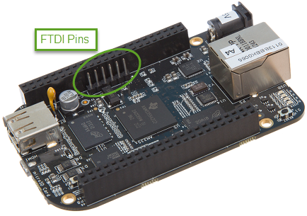
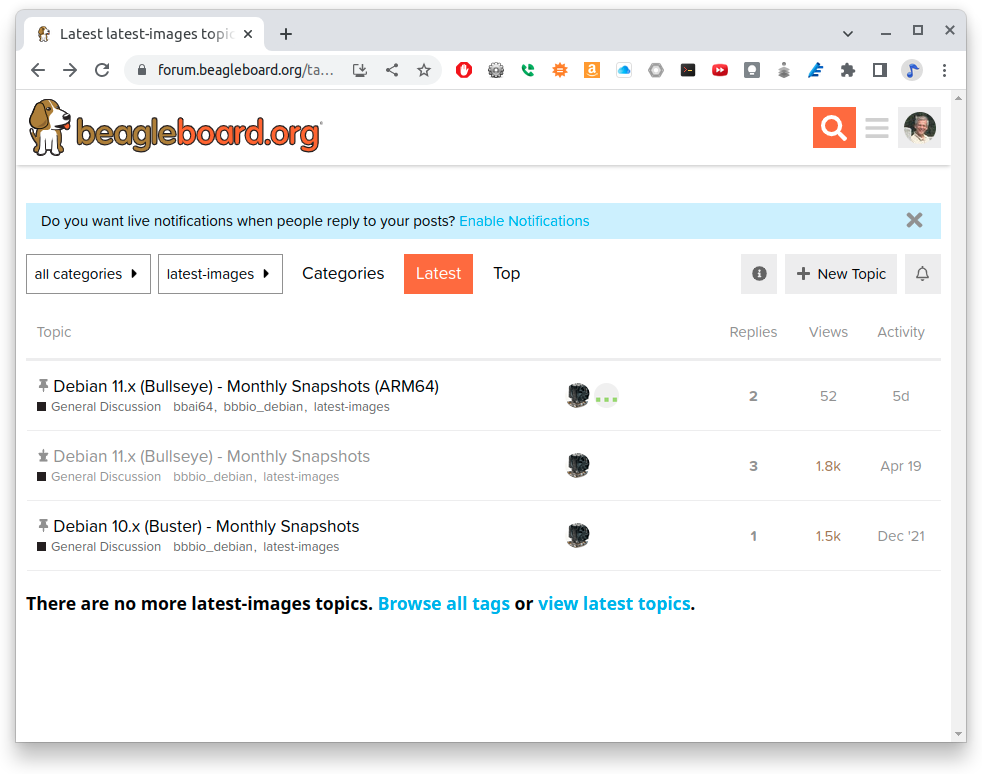
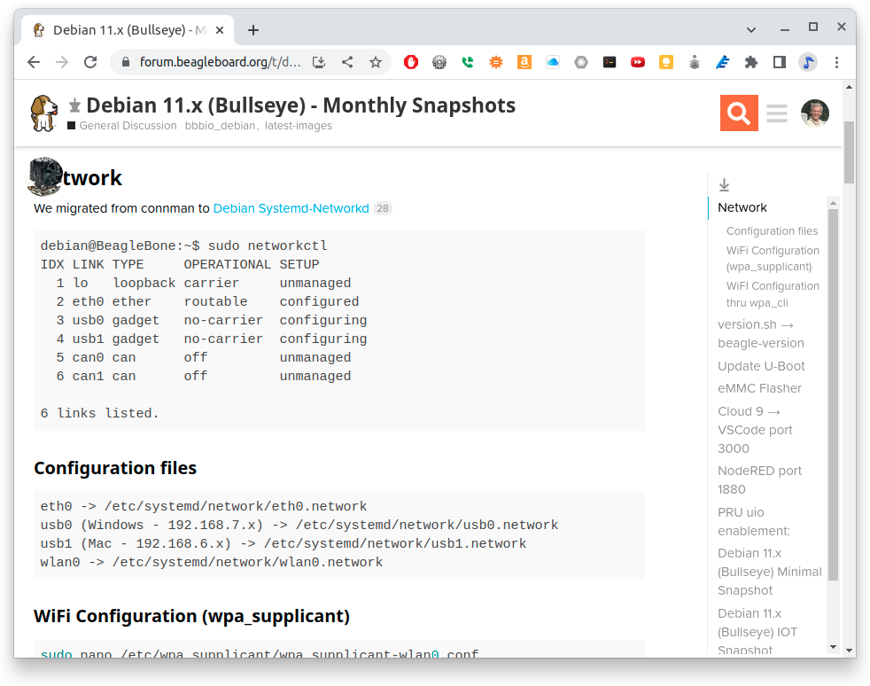

<!DOCTYPE html>
<html lang="en">
<head>
<meta charset="UTF-8">
<meta http-equiv="X-UA-Compatible" content="IE=edge">
<meta name="viewport" content="width=device-width, initial-scale=1.0">
<meta name="generator" content="Asciidoctor 2.0.12">
<title>Beyond the Basics</title>
<link rel="stylesheet" href="https://fonts.googleapis.com/css?family=Open+Sans:300,300italic,400,400italic,600,600italic%7CNoto+Serif:400,400italic,700,700italic%7CDroid+Sans+Mono:400,700">
<style>
/* Asciidoctor default stylesheet | MIT License | https://asciidoctor.org */
/* Uncomment @import statement to use as custom stylesheet */
/*@import "https://fonts.googleapis.com/css?family=Open+Sans:300,300italic,400,400italic,600,600italic%7CNoto+Serif:400,400italic,700,700italic%7CDroid+Sans+Mono:400,700";*/
article,aside,details,figcaption,figure,footer,header,hgroup,main,nav,section{display:block}
audio,video{display:inline-block}
audio:not([controls]){display:none;height:0}
html{font-family:sans-serif;-ms-text-size-adjust:100%;-webkit-text-size-adjust:100%}
a{background:none}
a:focus{outline:thin dotted}
a:active,a:hover{outline:0}
h1{font-size:2em;margin:.67em 0}
abbr[title]{border-bottom:1px dotted}
b,strong{font-weight:bold}
dfn{font-style:italic}
hr{-moz-box-sizing:content-box;box-sizing:content-box;height:0}
mark{background:#ff0;color:#000}
code,kbd,pre,samp{font-family:monospace;font-size:1em}
pre{white-space:pre-wrap}
q{quotes:"\201C" "\201D" "\2018" "\2019"}
small{font-size:80%}
sub,sup{font-size:75%;line-height:0;position:relative;vertical-align:baseline}
sup{top:-.5em}
sub{bottom:-.25em}
img{border:0}
svg:not(:root){overflow:hidden}
figure{margin:0}
fieldset{border:1px solid silver;margin:0 2px;padding:.35em .625em .75em}
legend{border:0;padding:0}
button,input,select,textarea{font-family:inherit;font-size:100%;margin:0}
button,input{line-height:normal}
button,select{text-transform:none}
button,html input[type="button"],input[type="reset"],input[type="submit"]{-webkit-appearance:button;cursor:pointer}
button[disabled],html input[disabled]{cursor:default}
input[type="checkbox"],input[type="radio"]{box-sizing:border-box;padding:0}
button::-moz-focus-inner,input::-moz-focus-inner{border:0;padding:0}
textarea{overflow:auto;vertical-align:top}
table{border-collapse:collapse;border-spacing:0}
*,*::before,*::after{-moz-box-sizing:border-box;-webkit-box-sizing:border-box;box-sizing:border-box}
html,body{font-size:100%}
body{background:#fff;color:rgba(0,0,0,.8);padding:0;margin:0;font-family:"Noto Serif","DejaVu Serif",serif;font-weight:400;font-style:normal;line-height:1;position:relative;cursor:auto;tab-size:4;word-wrap:anywhere;-moz-osx-font-smoothing:grayscale;-webkit-font-smoothing:antialiased}
a:hover{cursor:pointer}
img,object,embed{max-width:100%;height:auto}
object,embed{height:100%}
img{-ms-interpolation-mode:bicubic}
.left{float:left!important}
.right{float:right!important}
.text-left{text-align:left!important}
.text-right{text-align:right!important}
.text-center{text-align:center!important}
.text-justify{text-align:justify!important}
.hide{display:none}
img,object,svg{display:inline-block;vertical-align:middle}
textarea{height:auto;min-height:50px}
select{width:100%}
.subheader,.admonitionblock td.content>.title,.audioblock>.title,.exampleblock>.title,.imageblock>.title,.listingblock>.title,.literalblock>.title,.stemblock>.title,.openblock>.title,.paragraph>.title,.quoteblock>.title,table.tableblock>.title,.verseblock>.title,.videoblock>.title,.dlist>.title,.olist>.title,.ulist>.title,.qlist>.title,.hdlist>.title{line-height:1.45;color:#7a2518;font-weight:400;margin-top:0;margin-bottom:.25em}
div,dl,dt,dd,ul,ol,li,h1,h2,h3,#toctitle,.sidebarblock>.content>.title,h4,h5,h6,pre,form,p,blockquote,th,td{margin:0;padding:0}
a{color:#2156a5;text-decoration:underline;line-height:inherit}
a:hover,a:focus{color:#1d4b8f}
a img{border:0}
p{font-family:inherit;font-weight:400;font-size:1em;line-height:1.6;margin-bottom:1.25em;text-rendering:optimizeLegibility}
p aside{font-size:.875em;line-height:1.35;font-style:italic}
h1,h2,h3,#toctitle,.sidebarblock>.content>.title,h4,h5,h6{font-family:"Open Sans","DejaVu Sans",sans-serif;font-weight:300;font-style:normal;color:#ba3925;text-rendering:optimizeLegibility;margin-top:1em;margin-bottom:.5em;line-height:1.0125em}
h1 small,h2 small,h3 small,#toctitle small,.sidebarblock>.content>.title small,h4 small,h5 small,h6 small{font-size:60%;color:#e99b8f;line-height:0}
h1{font-size:2.125em}
h2{font-size:1.6875em}
h3,#toctitle,.sidebarblock>.content>.title{font-size:1.375em}
h4,h5{font-size:1.125em}
h6{font-size:1em}
hr{border:solid #dddddf;border-width:1px 0 0;clear:both;margin:1.25em 0 1.1875em;height:0}
em,i{font-style:italic;line-height:inherit}
strong,b{font-weight:bold;line-height:inherit}
small{font-size:60%;line-height:inherit}
code{font-family:"Droid Sans Mono","DejaVu Sans Mono",monospace;font-weight:400;color:rgba(0,0,0,.9)}
ul,ol,dl{font-size:1em;line-height:1.6;margin-bottom:1.25em;list-style-position:outside;font-family:inherit}
ul,ol{margin-left:1.5em}
ul li ul,ul li ol{margin-left:1.25em;margin-bottom:0;font-size:1em}
ul.square li ul,ul.circle li ul,ul.disc li ul{list-style:inherit}
ul.square{list-style-type:square}
ul.circle{list-style-type:circle}
ul.disc{list-style-type:disc}
ol li ul,ol li ol{margin-left:1.25em;margin-bottom:0}
dl dt{margin-bottom:.3125em;font-weight:bold}
dl dd{margin-bottom:1.25em}
abbr,acronym{text-transform:uppercase;font-size:90%;color:rgba(0,0,0,.8);border-bottom:1px dotted #ddd;cursor:help}
abbr{text-transform:none}
blockquote{margin:0 0 1.25em;padding:.5625em 1.25em 0 1.1875em;border-left:1px solid #ddd}
blockquote cite{display:block;font-size:.9375em;color:rgba(0,0,0,.6)}
blockquote cite::before{content:"\2014 \0020"}
blockquote cite a,blockquote cite a:visited{color:rgba(0,0,0,.6)}
blockquote,blockquote p{line-height:1.6;color:rgba(0,0,0,.85)}
@media screen and (min-width:768px){h1,h2,h3,#toctitle,.sidebarblock>.content>.title,h4,h5,h6{line-height:1.2}
h1{font-size:2.75em}
h2{font-size:2.3125em}
h3,#toctitle,.sidebarblock>.content>.title{font-size:1.6875em}
h4{font-size:1.4375em}}
table{background:#fff;margin-bottom:1.25em;border:solid 1px #dedede;word-wrap:normal}
table thead,table tfoot{background:#f7f8f7}
table thead tr th,table thead tr td,table tfoot tr th,table tfoot tr td{padding:.5em .625em .625em;font-size:inherit;color:rgba(0,0,0,.8);text-align:left}
table tr th,table tr td{padding:.5625em .625em;font-size:inherit;color:rgba(0,0,0,.8)}
table tr.even,table tr.alt{background:#f8f8f7}
table thead tr th,table tfoot tr th,table tbody tr td,table tr td,table tfoot tr td{line-height:1.6}
h1,h2,h3,#toctitle,.sidebarblock>.content>.title,h4,h5,h6{line-height:1.2;word-spacing:-.05em}
h1 strong,h2 strong,h3 strong,#toctitle strong,.sidebarblock>.content>.title strong,h4 strong,h5 strong,h6 strong{font-weight:400}
.center{margin-left:auto;margin-right:auto}
.stretch{width:100%}
.clearfix::before,.clearfix::after,.float-group::before,.float-group::after{content:" ";display:table}
.clearfix::after,.float-group::after{clear:both}
:not(pre).nobreak{word-wrap:normal}
:not(pre).nowrap{white-space:nowrap}
:not(pre).pre-wrap{white-space:pre-wrap}
:not(pre):not([class^=L])>code{font-size:.9375em;font-style:normal!important;letter-spacing:0;padding:.1em .5ex;word-spacing:-.15em;background:#f7f7f8;-webkit-border-radius:4px;border-radius:4px;line-height:1.45;text-rendering:optimizeSpeed}
pre{color:rgba(0,0,0,.9);font-family:"Droid Sans Mono","DejaVu Sans Mono",monospace;line-height:1.45;text-rendering:optimizeSpeed}
pre code,pre pre{color:inherit;font-size:inherit;line-height:inherit}
pre>code{display:block}
pre.nowrap,pre.nowrap pre{white-space:pre;word-wrap:normal}
em em{font-style:normal}
strong strong{font-weight:400}
.keyseq{color:rgba(51,51,51,.8)}
kbd{font-family:"Droid Sans Mono","DejaVu Sans Mono",monospace;display:inline-block;color:rgba(0,0,0,.8);font-size:.65em;line-height:1.45;background:#f7f7f7;border:1px solid #ccc;-webkit-border-radius:3px;border-radius:3px;-webkit-box-shadow:0 1px 0 rgba(0,0,0,.2),0 0 0 .1em white inset;box-shadow:0 1px 0 rgba(0,0,0,.2),0 0 0 .1em #fff inset;margin:0 .15em;padding:.2em .5em;vertical-align:middle;position:relative;top:-.1em;white-space:nowrap}
.keyseq kbd:first-child{margin-left:0}
.keyseq kbd:last-child{margin-right:0}
.menuseq,.menuref{color:#000}
.menuseq b:not(.caret),.menuref{font-weight:inherit}
.menuseq{word-spacing:-.02em}
.menuseq b.caret{font-size:1.25em;line-height:.8}
.menuseq i.caret{font-weight:bold;text-align:center;width:.45em}
b.button::before,b.button::after{position:relative;top:-1px;font-weight:400}
b.button::before{content:"[";padding:0 3px 0 2px}
b.button::after{content:"]";padding:0 2px 0 3px}
p a>code:hover{color:rgba(0,0,0,.9)}
#header,#content,#footnotes,#footer{width:100%;margin-left:auto;margin-right:auto;margin-top:0;margin-bottom:0;max-width:62.5em;*zoom:1;position:relative;padding-left:.9375em;padding-right:.9375em}
#header::before,#header::after,#content::before,#content::after,#footnotes::before,#footnotes::after,#footer::before,#footer::after{content:" ";display:table}
#header::after,#content::after,#footnotes::after,#footer::after{clear:both}
#content{margin-top:1.25em}
#content::before{content:none}
#header>h1:first-child{color:rgba(0,0,0,.85);margin-top:2.25rem;margin-bottom:0}
#header>h1:first-child+#toc{margin-top:8px;border-top:1px solid #dddddf}
#header>h1:only-child,body.toc2 #header>h1:nth-last-child(2){border-bottom:1px solid #dddddf;padding-bottom:8px}
#header .details{border-bottom:1px solid #dddddf;line-height:1.45;padding-top:.25em;padding-bottom:.25em;padding-left:.25em;color:rgba(0,0,0,.6);display:-ms-flexbox;display:-webkit-flex;display:flex;-ms-flex-flow:row wrap;-webkit-flex-flow:row wrap;flex-flow:row wrap}
#header .details span:first-child{margin-left:-.125em}
#header .details span.email a{color:rgba(0,0,0,.85)}
#header .details br{display:none}
#header .details br+span::before{content:"\00a0\2013\00a0"}
#header .details br+span.author::before{content:"\00a0\22c5\00a0";color:rgba(0,0,0,.85)}
#header .details br+span#revremark::before{content:"\00a0|\00a0"}
#header #revnumber{text-transform:capitalize}
#header #revnumber::after{content:"\00a0"}
#content>h1:first-child:not([class]){color:rgba(0,0,0,.85);border-bottom:1px solid #dddddf;padding-bottom:8px;margin-top:0;padding-top:1rem;margin-bottom:1.25rem}
#toc{border-bottom:1px solid #e7e7e9;padding-bottom:.5em}
#toc>ul{margin-left:.125em}
#toc ul.sectlevel0>li>a{font-style:italic}
#toc ul.sectlevel0 ul.sectlevel1{margin:.5em 0}
#toc ul{font-family:"Open Sans","DejaVu Sans",sans-serif;list-style-type:none}
#toc li{line-height:1.3334;margin-top:.3334em}
#toc a{text-decoration:none}
#toc a:active{text-decoration:underline}
#toctitle{color:#7a2518;font-size:1.2em}
@media screen and (min-width:768px){#toctitle{font-size:1.375em}
body.toc2{padding-left:15em;padding-right:0}
#toc.toc2{margin-top:0!important;background:#f8f8f7;position:fixed;width:15em;left:0;top:0;border-right:1px solid #e7e7e9;border-top-width:0!important;border-bottom-width:0!important;z-index:1000;padding:1.25em 1em;height:100%;overflow:auto}
#toc.toc2 #toctitle{margin-top:0;margin-bottom:.8rem;font-size:1.2em}
#toc.toc2>ul{font-size:.9em;margin-bottom:0}
#toc.toc2 ul ul{margin-left:0;padding-left:1em}
#toc.toc2 ul.sectlevel0 ul.sectlevel1{padding-left:0;margin-top:.5em;margin-bottom:.5em}
body.toc2.toc-right{padding-left:0;padding-right:15em}
body.toc2.toc-right #toc.toc2{border-right-width:0;border-left:1px solid #e7e7e9;left:auto;right:0}}
@media screen and (min-width:1280px){body.toc2{padding-left:20em;padding-right:0}
#toc.toc2{width:20em}
#toc.toc2 #toctitle{font-size:1.375em}
#toc.toc2>ul{font-size:.95em}
#toc.toc2 ul ul{padding-left:1.25em}
body.toc2.toc-right{padding-left:0;padding-right:20em}}
#content #toc{border-style:solid;border-width:1px;border-color:#e0e0dc;margin-bottom:1.25em;padding:1.25em;background:#f8f8f7;-webkit-border-radius:4px;border-radius:4px}
#content #toc>:first-child{margin-top:0}
#content #toc>:last-child{margin-bottom:0}
#footer{max-width:none;background:rgba(0,0,0,.8);padding:1.25em}
#footer-text{color:rgba(255,255,255,.8);line-height:1.44}
#content{margin-bottom:.625em}
.sect1{padding-bottom:.625em}
@media screen and (min-width:768px){#content{margin-bottom:1.25em}
.sect1{padding-bottom:1.25em}}
.sect1:last-child{padding-bottom:0}
.sect1+.sect1{border-top:1px solid #e7e7e9}
#content h1>a.anchor,h2>a.anchor,h3>a.anchor,#toctitle>a.anchor,.sidebarblock>.content>.title>a.anchor,h4>a.anchor,h5>a.anchor,h6>a.anchor{position:absolute;z-index:1001;width:1.5ex;margin-left:-1.5ex;display:block;text-decoration:none!important;visibility:hidden;text-align:center;font-weight:400}
#content h1>a.anchor::before,h2>a.anchor::before,h3>a.anchor::before,#toctitle>a.anchor::before,.sidebarblock>.content>.title>a.anchor::before,h4>a.anchor::before,h5>a.anchor::before,h6>a.anchor::before{content:"\00A7";font-size:.85em;display:block;padding-top:.1em}
#content h1:hover>a.anchor,#content h1>a.anchor:hover,h2:hover>a.anchor,h2>a.anchor:hover,h3:hover>a.anchor,#toctitle:hover>a.anchor,.sidebarblock>.content>.title:hover>a.anchor,h3>a.anchor:hover,#toctitle>a.anchor:hover,.sidebarblock>.content>.title>a.anchor:hover,h4:hover>a.anchor,h4>a.anchor:hover,h5:hover>a.anchor,h5>a.anchor:hover,h6:hover>a.anchor,h6>a.anchor:hover{visibility:visible}
#content h1>a.link,h2>a.link,h3>a.link,#toctitle>a.link,.sidebarblock>.content>.title>a.link,h4>a.link,h5>a.link,h6>a.link{color:#ba3925;text-decoration:none}
#content h1>a.link:hover,h2>a.link:hover,h3>a.link:hover,#toctitle>a.link:hover,.sidebarblock>.content>.title>a.link:hover,h4>a.link:hover,h5>a.link:hover,h6>a.link:hover{color:#a53221}
details,.audioblock,.imageblock,.literalblock,.listingblock,.stemblock,.videoblock{margin-bottom:1.25em}
details>summary:first-of-type{cursor:pointer;display:list-item;outline:none;margin-bottom:.75em}
.admonitionblock td.content>.title,.audioblock>.title,.exampleblock>.title,.imageblock>.title,.listingblock>.title,.literalblock>.title,.stemblock>.title,.openblock>.title,.paragraph>.title,.quoteblock>.title,table.tableblock>.title,.verseblock>.title,.videoblock>.title,.dlist>.title,.olist>.title,.ulist>.title,.qlist>.title,.hdlist>.title{text-rendering:optimizeLegibility;text-align:left;font-family:"Noto Serif","DejaVu Serif",serif;font-size:1rem;font-style:italic}
table.tableblock.fit-content>caption.title{white-space:nowrap;width:0}
.paragraph.lead>p,#preamble>.sectionbody>[class="paragraph"]:first-of-type p{font-size:1.21875em;line-height:1.6;color:rgba(0,0,0,.85)}
table.tableblock #preamble>.sectionbody>[class="paragraph"]:first-of-type p{font-size:inherit}
.admonitionblock>table{border-collapse:separate;border:0;background:none;width:100%}
.admonitionblock>table td.icon{text-align:center;width:80px}
.admonitionblock>table td.icon img{max-width:none}
.admonitionblock>table td.icon .title{font-weight:bold;font-family:"Open Sans","DejaVu Sans",sans-serif;text-transform:uppercase}
.admonitionblock>table td.content{padding-left:1.125em;padding-right:1.25em;border-left:1px solid #dddddf;color:rgba(0,0,0,.6);word-wrap:anywhere}
.admonitionblock>table td.content>:last-child>:last-child{margin-bottom:0}
.exampleblock>.content{border-style:solid;border-width:1px;border-color:#e6e6e6;margin-bottom:1.25em;padding:1.25em;background:#fff;-webkit-border-radius:4px;border-radius:4px}
.exampleblock>.content>:first-child{margin-top:0}
.exampleblock>.content>:last-child{margin-bottom:0}
.sidebarblock{border-style:solid;border-width:1px;border-color:#dbdbd6;margin-bottom:1.25em;padding:1.25em;background:#f3f3f2;-webkit-border-radius:4px;border-radius:4px}
.sidebarblock>:first-child{margin-top:0}
.sidebarblock>:last-child{margin-bottom:0}
.sidebarblock>.content>.title{color:#7a2518;margin-top:0;text-align:center}
.exampleblock>.content>:last-child>:last-child,.exampleblock>.content .olist>ol>li:last-child>:last-child,.exampleblock>.content .ulist>ul>li:last-child>:last-child,.exampleblock>.content .qlist>ol>li:last-child>:last-child,.sidebarblock>.content>:last-child>:last-child,.sidebarblock>.content .olist>ol>li:last-child>:last-child,.sidebarblock>.content .ulist>ul>li:last-child>:last-child,.sidebarblock>.content .qlist>ol>li:last-child>:last-child{margin-bottom:0}
.literalblock pre,.listingblock>.content>pre{-webkit-border-radius:4px;border-radius:4px;overflow-x:auto;padding:1em;font-size:.8125em}
@media screen and (min-width:768px){.literalblock pre,.listingblock>.content>pre{font-size:.90625em}}
@media screen and (min-width:1280px){.literalblock pre,.listingblock>.content>pre{font-size:1em}}
.literalblock pre,.listingblock>.content>pre:not(.highlight),.listingblock>.content>pre[class="highlight"],.listingblock>.content>pre[class^="highlight "]{background:#f7f7f8}
.literalblock.output pre{color:#f7f7f8;background:rgba(0,0,0,.9)}
.listingblock>.content{position:relative}
.listingblock code[data-lang]::before{display:none;content:attr(data-lang);position:absolute;font-size:.75em;top:.425rem;right:.5rem;line-height:1;text-transform:uppercase;color:inherit;opacity:.5}
.listingblock:hover code[data-lang]::before{display:block}
.listingblock.terminal pre .command::before{content:attr(data-prompt);padding-right:.5em;color:inherit;opacity:.5}
.listingblock.terminal pre .command:not([data-prompt])::before{content:"$"}
.listingblock pre.highlightjs{padding:0}
.listingblock pre.highlightjs>code{padding:1em;-webkit-border-radius:4px;border-radius:4px}
.listingblock pre.prettyprint{border-width:0}
.prettyprint{background:#f7f7f8}
pre.prettyprint .linenums{line-height:1.45;margin-left:2em}
pre.prettyprint li{background:none;list-style-type:inherit;padding-left:0}
pre.prettyprint li code[data-lang]::before{opacity:1}
pre.prettyprint li:not(:first-child) code[data-lang]::before{display:none}
table.linenotable{border-collapse:separate;border:0;margin-bottom:0;background:none}
table.linenotable td[class]{color:inherit;vertical-align:top;padding:0;line-height:inherit;white-space:normal}
table.linenotable td.code{padding-left:.75em}
table.linenotable td.linenos{border-right:1px solid currentColor;opacity:.35;padding-right:.5em}
pre.pygments .lineno{border-right:1px solid currentColor;opacity:.35;display:inline-block;margin-right:.75em}
pre.pygments .lineno::before{content:"";margin-right:-.125em}
.quoteblock{margin:0 1em 1.25em 1.5em;display:table}
.quoteblock:not(.excerpt)>.title{margin-left:-1.5em;margin-bottom:.75em}
.quoteblock blockquote,.quoteblock p{color:rgba(0,0,0,.85);font-size:1.15rem;line-height:1.75;word-spacing:.1em;letter-spacing:0;font-style:italic;text-align:justify}
.quoteblock blockquote{margin:0;padding:0;border:0}
.quoteblock blockquote::before{content:"\201c";float:left;font-size:2.75em;font-weight:bold;line-height:.6em;margin-left:-.6em;color:#7a2518;text-shadow:0 1px 2px rgba(0,0,0,.1)}
.quoteblock blockquote>.paragraph:last-child p{margin-bottom:0}
.quoteblock .attribution{margin-top:.75em;margin-right:.5ex;text-align:right}
.verseblock{margin:0 1em 1.25em}
.verseblock pre{font-family:"Open Sans","DejaVu Sans",sans;font-size:1.15rem;color:rgba(0,0,0,.85);font-weight:300;text-rendering:optimizeLegibility}
.verseblock pre strong{font-weight:400}
.verseblock .attribution{margin-top:1.25rem;margin-left:.5ex}
.quoteblock .attribution,.verseblock .attribution{font-size:.9375em;line-height:1.45;font-style:italic}
.quoteblock .attribution br,.verseblock .attribution br{display:none}
.quoteblock .attribution cite,.verseblock .attribution cite{display:block;letter-spacing:-.025em;color:rgba(0,0,0,.6)}
.quoteblock.abstract blockquote::before,.quoteblock.excerpt blockquote::before,.quoteblock .quoteblock blockquote::before{display:none}
.quoteblock.abstract blockquote,.quoteblock.abstract p,.quoteblock.excerpt blockquote,.quoteblock.excerpt p,.quoteblock .quoteblock blockquote,.quoteblock .quoteblock p{line-height:1.6;word-spacing:0}
.quoteblock.abstract{margin:0 1em 1.25em;display:block}
.quoteblock.abstract>.title{margin:0 0 .375em;font-size:1.15em;text-align:center}
.quoteblock.excerpt>blockquote,.quoteblock .quoteblock{padding:0 0 .25em 1em;border-left:.25em solid #dddddf}
.quoteblock.excerpt,.quoteblock .quoteblock{margin-left:0}
.quoteblock.excerpt blockquote,.quoteblock.excerpt p,.quoteblock .quoteblock blockquote,.quoteblock .quoteblock p{color:inherit;font-size:1.0625rem}
.quoteblock.excerpt .attribution,.quoteblock .quoteblock .attribution{color:inherit;text-align:left;margin-right:0}
p.tableblock:last-child{margin-bottom:0}
td.tableblock>.content{margin-bottom:1.25em;word-wrap:anywhere}
td.tableblock>.content>:last-child{margin-bottom:-1.25em}
table.tableblock,th.tableblock,td.tableblock{border:0 solid #dedede}
table.grid-all>*>tr>*{border-width:1px}
table.grid-cols>*>tr>*{border-width:0 1px}
table.grid-rows>*>tr>*{border-width:1px 0}
table.frame-all{border-width:1px}
table.frame-ends{border-width:1px 0}
table.frame-sides{border-width:0 1px}
table.frame-none>colgroup+*>:first-child>*,table.frame-sides>colgroup+*>:first-child>*{border-top-width:0}
table.frame-none>:last-child>:last-child>*,table.frame-sides>:last-child>:last-child>*{border-bottom-width:0}
table.frame-none>*>tr>:first-child,table.frame-ends>*>tr>:first-child{border-left-width:0}
table.frame-none>*>tr>:last-child,table.frame-ends>*>tr>:last-child{border-right-width:0}
table.stripes-all tr,table.stripes-odd tr:nth-of-type(odd),table.stripes-even tr:nth-of-type(even),table.stripes-hover tr:hover{background:#f8f8f7}
th.halign-left,td.halign-left{text-align:left}
th.halign-right,td.halign-right{text-align:right}
th.halign-center,td.halign-center{text-align:center}
th.valign-top,td.valign-top{vertical-align:top}
th.valign-bottom,td.valign-bottom{vertical-align:bottom}
th.valign-middle,td.valign-middle{vertical-align:middle}
table thead th,table tfoot th{font-weight:bold}
tbody tr th{background:#f7f8f7}
tbody tr th,tbody tr th p,tfoot tr th,tfoot tr th p{color:rgba(0,0,0,.8);font-weight:bold}
p.tableblock>code:only-child{background:none;padding:0}
p.tableblock{font-size:1em}
ol{margin-left:1.75em}
ul li ol{margin-left:1.5em}
dl dd{margin-left:1.125em}
dl dd:last-child,dl dd:last-child>:last-child{margin-bottom:0}
ol>li p,ul>li p,ul dd,ol dd,.olist .olist,.ulist .ulist,.ulist .olist,.olist .ulist{margin-bottom:.625em}
ul.checklist,ul.none,ol.none,ul.no-bullet,ol.no-bullet,ol.unnumbered,ul.unstyled,ol.unstyled{list-style-type:none}
ul.no-bullet,ol.no-bullet,ol.unnumbered{margin-left:.625em}
ul.unstyled,ol.unstyled{margin-left:0}
ul.checklist{margin-left:.625em}
ul.checklist li>p:first-child>.fa-square-o:first-child,ul.checklist li>p:first-child>.fa-check-square-o:first-child{width:1.25em;font-size:.8em;position:relative;bottom:.125em}
ul.checklist li>p:first-child>input[type="checkbox"]:first-child{margin-right:.25em}
ul.inline{display:-ms-flexbox;display:-webkit-box;display:flex;-ms-flex-flow:row wrap;-webkit-flex-flow:row wrap;flex-flow:row wrap;list-style:none;margin:0 0 .625em -1.25em}
ul.inline>li{margin-left:1.25em}
.unstyled dl dt{font-weight:400;font-style:normal}
ol.arabic{list-style-type:decimal}
ol.decimal{list-style-type:decimal-leading-zero}
ol.loweralpha{list-style-type:lower-alpha}
ol.upperalpha{list-style-type:upper-alpha}
ol.lowerroman{list-style-type:lower-roman}
ol.upperroman{list-style-type:upper-roman}
ol.lowergreek{list-style-type:lower-greek}
.hdlist>table,.colist>table{border:0;background:none}
.hdlist>table>tbody>tr,.colist>table>tbody>tr{background:none}
td.hdlist1,td.hdlist2{vertical-align:top;padding:0 .625em}
td.hdlist1{font-weight:bold;padding-bottom:1.25em}
td.hdlist2{word-wrap:anywhere}
.literalblock+.colist,.listingblock+.colist{margin-top:-.5em}
.colist td:not([class]):first-child{padding:.4em .75em 0;line-height:1;vertical-align:top}
.colist td:not([class]):first-child img{max-width:none}
.colist td:not([class]):last-child{padding:.25em 0}
.thumb,.th{line-height:0;display:inline-block;border:solid 4px #fff;-webkit-box-shadow:0 0 0 1px #ddd;box-shadow:0 0 0 1px #ddd}
.imageblock.left{margin:.25em .625em 1.25em 0}
.imageblock.right{margin:.25em 0 1.25em .625em}
.imageblock>.title{margin-bottom:0}
.imageblock.thumb,.imageblock.th{border-width:6px}
.imageblock.thumb>.title,.imageblock.th>.title{padding:0 .125em}
.image.left,.image.right{margin-top:.25em;margin-bottom:.25em;display:inline-block;line-height:0}
.image.left{margin-right:.625em}
.image.right{margin-left:.625em}
a.image{text-decoration:none;display:inline-block}
a.image object{pointer-events:none}
sup.footnote,sup.footnoteref{font-size:.875em;position:static;vertical-align:super}
sup.footnote a,sup.footnoteref a{text-decoration:none}
sup.footnote a:active,sup.footnoteref a:active{text-decoration:underline}
#footnotes{padding-top:.75em;padding-bottom:.75em;margin-bottom:.625em}
#footnotes hr{width:20%;min-width:6.25em;margin:-.25em 0 .75em;border-width:1px 0 0}
#footnotes .footnote{padding:0 .375em 0 .225em;line-height:1.3334;font-size:.875em;margin-left:1.2em;margin-bottom:.2em}
#footnotes .footnote a:first-of-type{font-weight:bold;text-decoration:none;margin-left:-1.05em}
#footnotes .footnote:last-of-type{margin-bottom:0}
#content #footnotes{margin-top:-.625em;margin-bottom:0;padding:.75em 0}
.gist .file-data>table{border:0;background:#fff;width:100%;margin-bottom:0}
.gist .file-data>table td.line-data{width:99%}
div.unbreakable{page-break-inside:avoid}
.big{font-size:larger}
.small{font-size:smaller}
.underline{text-decoration:underline}
.overline{text-decoration:overline}
.line-through{text-decoration:line-through}
.aqua{color:#00bfbf}
.aqua-background{background:#00fafa}
.black{color:#000}
.black-background{background:#000}
.blue{color:#0000bf}
.blue-background{background:#0000fa}
.fuchsia{color:#bf00bf}
.fuchsia-background{background:#fa00fa}
.gray{color:#606060}
.gray-background{background:#7d7d7d}
.green{color:#006000}
.green-background{background:#007d00}
.lime{color:#00bf00}
.lime-background{background:#00fa00}
.maroon{color:#600000}
.maroon-background{background:#7d0000}
.navy{color:#000060}
.navy-background{background:#00007d}
.olive{color:#606000}
.olive-background{background:#7d7d00}
.purple{color:#600060}
.purple-background{background:#7d007d}
.red{color:#bf0000}
.red-background{background:#fa0000}
.silver{color:#909090}
.silver-background{background:#bcbcbc}
.teal{color:#006060}
.teal-background{background:#007d7d}
.white{color:#bfbfbf}
.white-background{background:#fafafa}
.yellow{color:#bfbf00}
.yellow-background{background:#fafa00}
span.icon>.fa{cursor:default}
a span.icon>.fa{cursor:inherit}
.admonitionblock td.icon [class^="fa icon-"]{font-size:2.5em;text-shadow:1px 1px 2px rgba(0,0,0,.5);cursor:default}
.admonitionblock td.icon .icon-note::before{content:"\f05a";color:#19407c}
.admonitionblock td.icon .icon-tip::before{content:"\f0eb";text-shadow:1px 1px 2px rgba(155,155,0,.8);color:#111}
.admonitionblock td.icon .icon-warning::before{content:"\f071";color:#bf6900}
.admonitionblock td.icon .icon-caution::before{content:"\f06d";color:#bf3400}
.admonitionblock td.icon .icon-important::before{content:"\f06a";color:#bf0000}
.conum[data-value]{display:inline-block;color:#fff!important;background:rgba(0,0,0,.8);-webkit-border-radius:50%;border-radius:50%;text-align:center;font-size:.75em;width:1.67em;height:1.67em;line-height:1.67em;font-family:"Open Sans","DejaVu Sans",sans-serif;font-style:normal;font-weight:bold}
.conum[data-value] *{color:#fff!important}
.conum[data-value]+b{display:none}
.conum[data-value]::after{content:attr(data-value)}
pre .conum[data-value]{position:relative;top:-.125em}
b.conum *{color:inherit!important}
.conum:not([data-value]):empty{display:none}
dt,th.tableblock,td.content,div.footnote{text-rendering:optimizeLegibility}
h1,h2,p,td.content,span.alt{letter-spacing:-.01em}
p strong,td.content strong,div.footnote strong{letter-spacing:-.005em}
p,blockquote,dt,td.content,span.alt{font-size:1.0625rem}
p{margin-bottom:1.25rem}
.sidebarblock p,.sidebarblock dt,.sidebarblock td.content,p.tableblock{font-size:1em}
.exampleblock>.content{background:#fffef7;border-color:#e0e0dc;-webkit-box-shadow:0 1px 4px #e0e0dc;box-shadow:0 1px 4px #e0e0dc}
.print-only{display:none!important}
@page{margin:1.25cm .75cm}
@media print{*{-webkit-box-shadow:none!important;box-shadow:none!important;text-shadow:none!important}
html{font-size:80%}
a{color:inherit!important;text-decoration:underline!important}
a.bare,a[href^="#"],a[href^="mailto:"]{text-decoration:none!important}
a[href^="http:"]:not(.bare)::after,a[href^="https:"]:not(.bare)::after{content:"(" attr(href) ")";display:inline-block;font-size:.875em;padding-left:.25em}
abbr[title]::after{content:" (" attr(title) ")"}
pre,blockquote,tr,img,object,svg{page-break-inside:avoid}
thead{display:table-header-group}
svg{max-width:100%}
p,blockquote,dt,td.content{font-size:1em;orphans:3;widows:3}
h2,h3,#toctitle,.sidebarblock>.content>.title{page-break-after:avoid}
#header,#content,#footnotes,#footer{max-width:none}
#toc,.sidebarblock,.exampleblock>.content{background:none!important}
#toc{border-bottom:1px solid #dddddf!important;padding-bottom:0!important}
body.book #header{text-align:center}
body.book #header>h1:first-child{border:0!important;margin:2.5em 0 1em}
body.book #header .details{border:0!important;display:block;padding:0!important}
body.book #header .details span:first-child{margin-left:0!important}
body.book #header .details br{display:block}
body.book #header .details br+span::before{content:none!important}
body.book #toc{border:0!important;text-align:left!important;padding:0!important;margin:0!important}
body.book #toc,body.book #preamble,body.book h1.sect0,body.book .sect1>h2{page-break-before:always}
.listingblock code[data-lang]::before{display:block}
#footer{padding:0 .9375em}
.hide-on-print{display:none!important}
.print-only{display:block!important}
.hide-for-print{display:none!important}
.show-for-print{display:inherit!important}}
@media print,amzn-kf8{#header>h1:first-child{margin-top:1.25rem}
.sect1{padding:0!important}
.sect1+.sect1{border:0}
#footer{background:none}
#footer-text{color:rgba(0,0,0,.6);font-size:.9em}}
@media amzn-kf8{#header,#content,#footnotes,#footer{padding:0}}
</style>
</head>
<body class="article">
<div id="header">
</div>
<div id="content">
<div class="sect1">
<h2 id="tips">Beyond the Basics</h2>
<div class="sectionbody">
<div class="sect2">
<h3 id="_introduction">Introduction</h3>
<div class="paragraph">
<p>In <a href="#basics">[basics]</a>, you learned how to set up BeagleBone Black, and <a href="#sensors">[sensors]</a>, <a href="#displays">[displays]</a>, and <a href="#motors">[motors]</a> showed how to interface to the physical world. The remainder of the book moves into some more exciting advanced topics, and this chapter gets you ready for them.</p>
</div>
<div class="paragraph">
<p>The recipes in this chapter assume that you are running Linux on your host computer (<a href="#tips_pick_os">[tips_pick_os]</a>) and are comfortable with using Linux. We continue to assume that you are logged in as debian on your Bone.</p>
</div>
</div>
<div class="sect2">
<h3 id="tips_hdmi">Running Your Bone Standalone</h3>
<div class="sect3">
<h4 id="_problem">Problem</h4>
<div class="paragraph">
<p>You want to use BeagleBone Black as a desktop computer with keyboard, mouse, and an HDMI display.</p>
</div>
</div>
<div class="sect3">
<h4 id="_solution">Solution</h4>
<div class="paragraph">
<p>The Bone comes with USB and a microHDMI output. All you need to do is connect your keyboard, mouse, and HDMI display to it.</p>
</div>
<div class="paragraph">
<p>To make this recipe, you will need:</p>
</div>
<div class="ulist">
<ul>
<li>
<p>Standard HDMI cable and female HDMI-to-male microHDMI adapter, or</p>
</li>
<li>
<p>MicroHDMI-to-HDMI adapter cable</p>
</li>
<li>
<p>HDMI monitor</p>
</li>
<li>
<p>USB keyboard and mouse</p>
</li>
<li>
<p>Powered USB hub</p>
</li>
</ul>
</div>
<div class="admonitionblock note">
<table>
<tr>
<td class="icon">
<div class="title">Note</div>
</td>
<td class="content">
<div class="paragraph">
<p>The microHDMI adapter is nice because it allows you to use a regular HDMI cable with the Bone. However, it will block other ports and can damage the Bone if you aren&#8217;t careful. The microHDMI-to-HDMI cable won&#8217;t have these problems.</p>
</div>
</td>
</tr>
</table>
</div>
<div class="admonitionblock tip">
<table>
<tr>
<td class="icon">
<div class="title">Tip</div>
</td>
<td class="content">
<div class="paragraph">
<p>You can also use an HDMI-to-DVI cable (<a href="#app_misc">[app_misc]</a>) and use your Bone with a DVI-D display.</p>
</div>
</td>
</tr>
</table>
</div>
<div class="paragraph">
<p>The adapter looks something like <a href="#tips_HDMI_adaptor_fig">Female HDMI-to-male microHDMI adapter</a>.</p>
</div>
<div id="tips_HDMI_adaptor_fig" class="imageblock">
<div class="content">

</div>
<div class="title">Figure 1. Female HDMI-to-male microHDMI adapter</div>
</div>
<div class="paragraph">
<p>Plug the small end into the microHDMI input on the Bone and plug your HDMI cable into the other end of the adapter and your monitor. If nothing displays on your Bone, reboot.</p>
</div>
<div class="paragraph">
<p>If nothing appears after the reboot, edit the <em>/boot/uEnv.txt</em> file. Search for the line containing +disable_uboot_overlay_video=1 and make sure it&#8217;s commented out:</p>
</div>
<div class="listingblock">
<div class="content">
<pre class="highlight"><code class="language-console" data-lang="console">###Disable auto loading of virtual capes (emmc/video/wireless/adc)
#disable_uboot_overlay_emmc=1
#disable_uboot_overlay_video=1</code></pre>
</div>
</div>
<div class="paragraph">
<p>Then reboot.</p>
</div>
<div class="admonitionblock tip">
<table>
<tr>
<td class="icon">
<div class="title">Tip</div>
</td>
<td class="content">
<div class="paragraph">
<p>The <em>/boot/uEnv.txt</em> file contains a number of configuration commands that are executed at boot time. The # character is used to add comments; that is, everything to the right of a # is ignored by the Bone and is assumed to be for humans to read. In the previous example, +###Disable auto loading is a comment that informs us the next line(s) are for disabling things. Two disable_uboot_overlay commands follow. Both should be commented-out and won&#8217;t be executed by the Bone.</p>
</div>
<div class="paragraph">
<p>Why not just remove the line?  Later, you might decide you need more general-purpose input/output (GPIO) pins and don&#8217;t need the HDMI display. If so, just remove the # from the disable_uboot_overlay_video=1 command. If you had completely removed the line earlier, you would have to look up the details somewhere to re-create it.</p>
</div>
<div class="paragraph">
<p>When in doubt, comment-out; don&#8217;t delete.</p>
</div>
</td>
</tr>
</table>
</div>
<div class="admonitionblock note">
<table>
<tr>
<td class="icon">
<div class="title">Note</div>
</td>
<td class="content">
<div class="paragraph">
<p>If you want to re-enable the HDMI audio, just comment-out the line you added.</p>
</div>
</td>
</tr>
</table>
</div>
<div class="paragraph">
<p>The Bone has only one USB port, so you will need to get either a keyboard with a USB hub or a USB hub. Plug the USB hub into the Bone and then plug your keyboard and mouse in to the hub. You now have a Beagle workstation; no host computer is needed.</p>
</div>
<div class="admonitionblock tip">
<table>
<tr>
<td class="icon">
<div class="title">Tip</div>
</td>
<td class="content">
<div class="paragraph">
<p>A powered hub is recommended because USB can supply only 500 mA, and you&#8217;ll want to plug many things into the Bone.</p>
</div>
</td>
</tr>
</table>
</div>
</div>
<div class="sect3">
<h4 id="_discussion">Discussion</h4>
<div class="paragraph">
<p>This recipe disables the HDMI audio, which allows the Bone to try other resolutions. If this fails, see <a href="http://bit.ly/1GEPcOH">BeagleBoneBlack HDMI</a> for how to force the Bone&#8217;s resolution to match your monitor.</p>
</div>
</div>
</div>
<div class="sect2">
<h3 id="tips_shell">Getting to the Command Shell via SSH</h3>
<div class="sect3">
<h4 id="_problem_2">Problem</h4>
<div class="paragraph">
<p>You want to connect to the command shell of a remote Bone from your host <span class="keep-together">computer</span>.</p>
</div>
</div>
<div class="sect3">
<h4 id="_solution_2">Solution</h4>
<div class="paragraph">
<p><a href="#basics_vsc_IDE">[basics_vsc_IDE]</a> shows how to run shell commands in the Visual Studio Code bash tab. However, the Bone has Secure Shell (SSH) enabled right out of the box, so you can easily connect by using the following command to log in as user debian, (note the $ at the end of the prompt):</p>
</div>
<pre data-type="programlisting">
host$ <strong>ssh debian@192.168.7.2</strong>
Warning: Permanently added 'bone,192.168.7.2' (ECDSA) to the list of known hosts.
Last login: Mon Dec 22 07:53:06 2014 from yoder-linux.local
bone$
</pre>
<div class="paragraph">
<p>debian has the default password tempped It&#8217;s best to change the password:</p>
</div>
<pre data-type="programlisting">
bone$ <strong>passwd</strong>
Changing password for debian.
(current) UNIX password:
Enter new UNIX password:
Retype new UNIX password:
passwd: password updated successfully
</pre>
</div>
</div>
<div class="sect2">
<h3 id="tips_serial">Getting to the Command Shell via the Virtual Serial Port</h3>
<div class="sect3">
<h4 id="_problem_3">Problem</h4>
<div class="paragraph">
<p>You want to connect to the command shell of a remote Bone from your host computer without using SSH.</p>
</div>
</div>
<div class="sect3">
<h4 id="_solution_3">Solution</h4>
<div class="paragraph">
<p>Sometimes, you can&#8217;t connect to the Bone via SSH, but you have a network working over USB to the Bone. There is a way to access the command line to fix things without requiring extra hardware. (<a href="#tips_FTDI">Viewing and Debugging the Kernel and u-boot Messages at Boot Time</a> shows a way that works even if you don&#8217;t have a network working over USB, but it requires a special serial-to-USB cable.)</p>
</div>
<div class="paragraph">
<p>First, check to ensure that the serial port is there. On the host computer, run the following command:</p>
</div>
<pre data-type="programlisting">
host$ <strong>ls -ls /dev/ttyACM0</strong>
0 crw-rw---- 1 root dialout 166, 0 Jun 19 11:47 /dev/ttyACM0
</pre>
<div class="paragraph">
<p><em>/dev/ttyACM0</em> is a serial port on your host computer that the Bone creates when it boots up.
The letters crw-rw---- show that you can&#8217;t access it as a normal user. However, you <em>can</em> access it if you are part of dialout group. See if you are in the dialout group:</p>
</div>
<pre data-type="programlisting">
host$ <strong>groups</strong>
yoder adm tty uucp <strong>dialout</strong> cdrom sudo dip plugdev lpadmin sambashare
</pre>
<div class="paragraph">
<p>Looks like I&#8217;m already in the group, but if you aren&#8217;t, just add yourself to the group:</p>
</div>
<pre data-type="programlisting">
host$ <strong>sudo adduser $USER dialout</strong>
</pre>
<div class="paragraph">
<p>You have to run adduser only once. Your host computer will remember the next time you boot up. Now, install and run the screen command:</p>
</div>
<pre data-type="programlisting">
host$ <strong>sudo apt install screen</strong>
host$ <strong>screen /dev/ttyACM0 115200</strong>
Debian GNU/Linux 7 beaglebone ttyGS0

default username:password is [debian:temppwd]

Support/FAQ: http://elinux.org/Beagleboard:BeagleBoneBlack_Debian

The IP Address for usb0 is: 192.168.7.2
beaglebone login:
</pre>
<div class="paragraph">
<p>The /dev/ttyACM0 parameter specifies which serial port to connect to, and 115200
tells the speed of the connection. In this case, it&#8217;s 115,200 bits per second.</p>
</div>
</div>
</div>
<div class="sect2">
<h3 id="tips_FTDI">Viewing and Debugging the Kernel and u-boot Messages at Boot Time</h3>
<div class="sect3">
<h4 id="_problem_4">Problem</h4>
<div class="paragraph">
<p>You want to see the messages that are logged by BeagleBone Black as it comes to life.</p>
</div>
</div>
<div class="sect3">
<h4 id="_solution_4">Solution</h4>
<div class="paragraph">
<p>There is no network in place when the Bone first boots up, so <a href="#tips_shell">Getting to the Command Shell via SSH</a> and <a href="#tips_serial">Getting to the Command Shell via the Virtual Serial Port</a> won&#8217;t work. This recipe uses some extra hardware (FTDI cable) to attach to the Bone&#8217;s console serial port.</p>
</div>
<div class="paragraph">
<p>To make this recipe, you will need:</p>
</div>
<div class="ulist">
<ul>
<li>
<p>3.3 V FTDI cable</p>
</li>
</ul>
</div>
<div class="admonitionblock warning">
<table>
<tr>
<td class="icon">
<div class="title">Warning</div>
</td>
<td class="content">
<div class="paragraph">
<p>Be sure to get a 3.3 V FTDI cable (shown in <a href="#tips_FTDIcable_fig">FTDI cable</a>), because the 5 V cables won&#8217;t work.</p>
</div>
</td>
</tr>
</table>
</div>
<div class="admonitionblock tip">
<table>
<tr>
<td class="icon">
<div class="title">Tip</div>
</td>
<td class="content">
<div class="paragraph">
<p>The Bone&#8217;s Serial Debug J1 connector has Pin 1 connected to ground, Pin 4 to receive, and Pin 5 to transmit. The other pins are not attached.</p>
</div>
</td>
</tr>
</table>
</div>
<div id="tips_FTDIcable_fig" class="imageblock">
<div class="content">

</div>
<div class="title">Figure 2. FTDI cable</div>
</div>
<div class="paragraph">
<p>Look for a small triangle at the end of the FTDI cable (<a href="#tips_FTDIconnector_fig">FTDI connector</a>).  It&#8217;s often connected to the black wire.</p>
</div>
<div id="tips_FTDIconnector_fig" class="imageblock">
<div class="content">

</div>
<div class="title">Figure 3. FTDI connector</div>
</div>
<div class="paragraph">
<p>Next, look for the FTDI pins of the Bone (labeled J1 on the Bone), shown in <a href="#tips_black_hardware_details_fig">FTDI pins for the FTDI connector</a>.
They are next to the P9 header and begin near pin 20. There is a white dot near P9_20.</p>
</div>
<div id="tips_black_hardware_details_fig" class="imageblock">
<div class="content">

</div>
<div class="title">Figure 4. FTDI pins for the FTDI connector</div>
</div>
<div class="paragraph">
<p>Plug the FTDI connector into the FTDI pins, being sure to connect the <em>triangle</em> pin on the connector to the <em>white dot</em> pin of the FTDI connector.</p>
</div>
<div class="paragraph">
<p>Now, run the following commands on your host computer:</p>
</div>
<pre data-type="programlisting">
host$ <strong>ls -ls /dev/ttyUSB0</strong>
0 crw-rw---- 1 root dialout 188, 0 Jun 19 12:43 /dev/ttyUSB0
host$ <strong>sudo adduser $USER dialout</strong>
host$ <strong>screen /dev/ttyUSB0 115200</strong>
Debian GNU/Linux 7 beaglebone ttyO0

default username:password is [debian:temppwd]

Support/FAQ: http://elinux.org/Beagleboard:BeagleBoneBlack_Debian

The IP Address for usb0 is: 192.168.7.2
beaglebone login:
</pre>
<div class="admonitionblock note">
<table>
<tr>
<td class="icon">
<div class="title">Note</div>
</td>
<td class="content">
<div class="paragraph">
<p>Your screen might initially be blank. Press Enter a couple times to see the login prompt.</p>
</div>
</td>
</tr>
</table>
</div>
</div>
</div>
<div class="sect2">
<h3 id="_verifying_you_have_the_latest_version_of_the_os_on_your_bone_from_the_shell">Verifying You Have the Latest Version of the OS on Your Bone from the Shell</h3>
<div class="sect3">
<h4 id="_problem_5">Problem</h4>
<div class="paragraph">
<p>You are logged in to your Bone with a command prompt and want to know what version of the OS you are running.</p>
</div>
</div>
<div class="sect3">
<h4 id="_solution_5">Solution</h4>
<div class="paragraph">
<p>Log in to your Bone and enter the following command:</p>
</div>
<pre data-type="programlisting">
bone$ <strong>cat /etc/dogtag</strong>
BeagleBoard.org Debian Bullseye IoT Image 2022-07-01
</pre>
</div>
<div class="sect3">
<h4 id="_discussion_2">Discussion</h4>
<div class="paragraph">
<p><a href="#basics_latest_os">[basics_latest_os]</a> shows how to open the <em>ID.txt</em> file to see the OS version. The <em>/etc/dogtag</em> file has the same contents and is easier to find if you already have a command prompt. See <a href="#basics_install_os">[basics_install_os]</a> if you need to update your OS.</p>
</div>
</div>
</div>
<div class="sect2">
<h3 id="_controlling_the_bone_remotely_with_a_vnc">Controlling the Bone Remotely with a VNC</h3>
<div class="sect3">
<h4 id="_problem_6">Problem</h4>
<div class="paragraph">
<p>You want to access the BeagleBone&#8217;s graphical desktop from your host computer.</p>
</div>
</div>
<div class="sect3">
<h4 id="_solution_6">Solution</h4>
<div class="paragraph">
<p>Run the installed Virtual Network Computing (VNC) server:</p>
</div>
<pre data-type="programlisting">
bone$ <strong>tightvncserver</strong>

You will require a password to access your desktops.

Password:
Verify:
Would you like to enter a view-only password (y/n)? n
xauth: (argv):1:  bad display name "beaglebone:1" in "add" command

New 'X' desktop is beaglebone:1

reating default startup script /home/debian/.vnc/xstartup
Starting applications specified in /home/debian/.vnc/xstartup
Log file is /home/debian/.vnc/beagleboard:1.log
</pre>
<div class="paragraph">
<p>To connect to the Bone, you will need to run a VNC client. There are many to choose from. Remmina Remote Desktop Client is already installed on Ubuntu. Start and select the new remote desktop file button (<a href="#tips_vnc1_fig">Creating a new remote desktop file in Remmina Remote Desktop Client</a>).</p>
</div>
<div id="tips_vnc1_fig" class="imageblock">
<div class="content">

</div>
<div class="title">Figure 5. Creating a new remote desktop file in Remmina Remote Desktop Client</div>
</div>
<div class="paragraph">
<p>Give your connection a name, being sure to select "Remmina VNC Plugin" Also, be sure to add :1 after the server address, as shown in <a href="#tips_vnc2_fig">Configuring the Remmina Remote Desktop Client</a>. This should match the :1 that was displayed when you started vncserver.</p>
</div>
<div id="tips_vnc2_fig" class="imageblock">
<div class="content">

</div>
<div class="title">Figure 6. Configuring the Remmina Remote Desktop Client</div>
</div>
<div class="paragraph">
<p>Click Connect to start graphical access to your Bone, as shown in <a href="#tips_vnc3_fig">The Remmina Remote Desktop Client showing the BeagleBone desktop</a>.</p>
</div>
<div id="tips_vnc3_fig" class="imageblock">
<div class="content">

</div>
<div class="title">Figure 7. The Remmina Remote Desktop Client showing the BeagleBone desktop</div>
</div>
<div class="admonitionblock tip">
<table>
<tr>
<td class="icon">
<div class="title">Tip</div>
</td>
<td class="content">
<div class="paragraph">
<p>You might need to resize the VNC screen on your host to see the bottom menu bar on your Bone.</p>
</div>
</td>
</tr>
</table>
</div>
<div class="admonitionblock note">
<table>
<tr>
<td class="icon">
<div class="title">Note</div>
</td>
<td class="content">
<div class="paragraph">
<p>You need to have X Windows installed and running for the VNC to work.  Here&#8217;s how to install it. This needs some 250M of disk space and 19 minutes to install.</p>
</div>
<pre data-type="programlisting">
bone$ <strong>bone$ sudo apt install bbb.io-xfce4-desktop</strong>
bone$ <strong>cp /etc/bbb.io/templates/fbdev.xorg.conf /etc/X11/xorg.conf</strong>
bone$ <strong>startxfce4</strong>
/usr/bin/startxfce4: Starting X server
/usr/bin/startxfce4: 122: exec: xinit: not found
<pre>
</td>
</tr>
</table>
</div>
</div>
</div>
<div class="sect2">
<h3 id="_learning_typical_gnulinux_commands">Learning Typical GNU/Linux Commands</h3>
<div class="sect3">
<h4 id="_problem_7">Problem</h4>
<div class="paragraph">
<p>There are many powerful commands to use in Linux. How do you learn about them?</p>
</div>
</div>
<div class="sect3">
<h4 id="_solution_7">Solution</h4>
<div class="paragraph">
<p><a href="#tips_linux_commands">Common Linux commands</a> lists many common Linux commands.</p>
</div>
<table id="tips_linux_commands" class="tableblock frame-all grid-all fit-content">
<caption class="title">Table 1. Common Linux commands</caption>
<colgroup>
<col>
<col>
</colgroup>
<thead>
<tr>
<th class="tableblock halign-left valign-top">Command</th>
<th class="tableblock halign-left valign-top">Action</th>
</tr>
</thead>
<tbody>
<tr>
<td class="tableblock halign-left valign-top"><p class="tableblock">pwd</p></td>
<td class="tableblock halign-left valign-top"><p class="tableblock">show current directory</p></td>
</tr>
<tr>
<td class="tableblock halign-left valign-top"><p class="tableblock">cd</p></td>
<td class="tableblock halign-left valign-top"><p class="tableblock">change current directory</p></td>
</tr>
<tr>
<td class="tableblock halign-left valign-top"><p class="tableblock">ls</p></td>
<td class="tableblock halign-left valign-top"><p class="tableblock">list directory contents</p></td>
</tr>
<tr>
<td class="tableblock halign-left valign-top"><p class="tableblock">chmod</p></td>
<td class="tableblock halign-left valign-top"><p class="tableblock">change file permissions</p></td>
</tr>
<tr>
<td class="tableblock halign-left valign-top"><p class="tableblock">chown</p></td>
<td class="tableblock halign-left valign-top"><p class="tableblock">change file ownership</p></td>
</tr>
<tr>
<td class="tableblock halign-left valign-top"><p class="tableblock">cp</p></td>
<td class="tableblock halign-left valign-top"><p class="tableblock">copy files</p></td>
</tr>
<tr>
<td class="tableblock halign-left valign-top"><p class="tableblock">mv</p></td>
<td class="tableblock halign-left valign-top"><p class="tableblock">move files</p></td>
</tr>
<tr>
<td class="tableblock halign-left valign-top"><p class="tableblock">rm</p></td>
<td class="tableblock halign-left valign-top"><p class="tableblock">remove files</p></td>
</tr>
<tr>
<td class="tableblock halign-left valign-top"><p class="tableblock">mkdir</p></td>
<td class="tableblock halign-left valign-top"><p class="tableblock">make directory</p></td>
</tr>
<tr>
<td class="tableblock halign-left valign-top"><p class="tableblock">rmdir</p></td>
<td class="tableblock halign-left valign-top"><p class="tableblock">remove directory</p></td>
</tr>
<tr>
<td class="tableblock halign-left valign-top"><p class="tableblock">cat</p></td>
<td class="tableblock halign-left valign-top"><p class="tableblock">dump file contents</p></td>
</tr>
<tr>
<td class="tableblock halign-left valign-top"><p class="tableblock">less</p></td>
<td class="tableblock halign-left valign-top"><p class="tableblock">progressively dump file</p></td>
</tr>
<tr>
<td class="tableblock halign-left valign-top"><p class="tableblock">vi</p></td>
<td class="tableblock halign-left valign-top"><p class="tableblock">edit file (complex)</p></td>
</tr>
<tr>
<td class="tableblock halign-left valign-top"><p class="tableblock">nano</p></td>
<td class="tableblock halign-left valign-top"><p class="tableblock">edit file (simple)</p></td>
</tr>
<tr>
<td class="tableblock halign-left valign-top"><p class="tableblock">head</p></td>
<td class="tableblock halign-left valign-top"><p class="tableblock">trim dump to top</p></td>
</tr>
<tr>
<td class="tableblock halign-left valign-top"><p class="tableblock">tail</p></td>
<td class="tableblock halign-left valign-top"><p class="tableblock">trim dump to bottom</p></td>
</tr>
<tr>
<td class="tableblock halign-left valign-top"><p class="tableblock">echo</p></td>
<td class="tableblock halign-left valign-top"><p class="tableblock">print/dump value</p></td>
</tr>
<tr>
<td class="tableblock halign-left valign-top"><p class="tableblock">env</p></td>
<td class="tableblock halign-left valign-top"><p class="tableblock">dump environment variables</p></td>
</tr>
<tr>
<td class="tableblock halign-left valign-top"><p class="tableblock">export</p></td>
<td class="tableblock halign-left valign-top"><p class="tableblock">set environment variable</p></td>
</tr>
<tr>
<td class="tableblock halign-left valign-top"><p class="tableblock">history</p></td>
<td class="tableblock halign-left valign-top"><p class="tableblock">dump command history</p></td>
</tr>
<tr>
<td class="tableblock halign-left valign-top"><p class="tableblock">grep</p></td>
<td class="tableblock halign-left valign-top"><p class="tableblock">search dump for strings</p></td>
</tr>
<tr>
<td class="tableblock halign-left valign-top"><p class="tableblock">man</p></td>
<td class="tableblock halign-left valign-top"><p class="tableblock">get help on command</p></td>
</tr>
<tr>
<td class="tableblock halign-left valign-top"><p class="tableblock">apropos</p></td>
<td class="tableblock halign-left valign-top"><p class="tableblock">show list of man pages</p></td>
</tr>
<tr>
<td class="tableblock halign-left valign-top"><p class="tableblock">find</p></td>
<td class="tableblock halign-left valign-top"><p class="tableblock">search for files</p></td>
</tr>
<tr>
<td class="tableblock halign-left valign-top"><p class="tableblock">tar</p></td>
<td class="tableblock halign-left valign-top"><p class="tableblock">create/extract file archives</p></td>
</tr>
<tr>
<td class="tableblock halign-left valign-top"><p class="tableblock">gzip</p></td>
<td class="tableblock halign-left valign-top"><p class="tableblock">compress a file</p></td>
</tr>
<tr>
<td class="tableblock halign-left valign-top"><p class="tableblock">gunzip</p></td>
<td class="tableblock halign-left valign-top"><p class="tableblock">decompress a file</p></td>
</tr>
<tr>
<td class="tableblock halign-left valign-top"><p class="tableblock">du</p></td>
<td class="tableblock halign-left valign-top"><p class="tableblock">show disk usage</p></td>
</tr>
<tr>
<td class="tableblock halign-left valign-top"><p class="tableblock">df</p></td>
<td class="tableblock halign-left valign-top"><p class="tableblock">show disk free space</p></td>
</tr>
<tr>
<td class="tableblock halign-left valign-top"><p class="tableblock">mount</p></td>
<td class="tableblock halign-left valign-top"><p class="tableblock">mount disks</p></td>
</tr>
<tr>
<td class="tableblock halign-left valign-top"><p class="tableblock">tee</p></td>
<td class="tableblock halign-left valign-top"><p class="tableblock">write dump to file in parallel</p></td>
</tr>
<tr>
<td class="tableblock halign-left valign-top"><p class="tableblock">hexdump</p></td>
<td class="tableblock halign-left valign-top"><p class="tableblock">readable binary dumps</p></td>
</tr>
<tr>
<td class="tableblock halign-left valign-top"><p class="tableblock">whereis</p></td>
<td class="tableblock halign-left valign-top"><p class="tableblock">locates binary and source files</p></td>
</tr>
</tbody>
</table>
</div>
</div>
<div class="sect2">
<h3 id="tips_editing_files">Editing a Text File from the GNU/Linux Command Shell</h3>
<div class="sect3">
<h4 id="_problem_8">Problem</h4>
<div class="paragraph">
<p>You want to run an editor to change a file.</p>
</div>
</div>
<div class="sect3">
<h4 id="_solution_8">Solution</h4>
<div class="paragraph">
<p>The Bone comes with a number of editors. The simplest to learn is nano. Just enter the following command:</p>
</div>
<pre data-type="programlisting">
bone$ <strong>nano file</strong>
</pre>
<div class="paragraph">
<p>You are now in nano (<a href="#tips_nano_fig">Editing a file with nano</a>). You can&#8217;t move around the screen using the mouse, so use the arrow keys. The bottom two lines of the screen list some useful commands. Pressing &#708;G (Ctrl-G) will display more useful commands. &#708;X (Ctrl-X) exits nano and gives you the option of saving the file.</p>
</div>
<div id="tips_nano_fig" class="imageblock">
<div class="content">

</div>
<div class="title">Figure 8. Editing a file with nano</div>
</div>
<div class="admonitionblock tip">
<table>
<tr>
<td class="icon">
<div class="title">Tip</div>
</td>
<td class="content">
<div class="paragraph">
<p>By default, the file you create will be saved in the directory from which you opened nano.</p>
</div>
</td>
</tr>
</table>
</div>
</div>
<div class="sect3">
<h4 id="_discussion_3">Discussion</h4>
<div class="paragraph">
<p>Many other text editors will run on the Bone. vi, vim, emacs, and  even eclipse are all supported. See <a href="#tips_apt">Installing Additional Packages from the Debian Package Feed</a> to learn if your favorite is one of them.</p>
</div>
</div>
</div>
<div class="sect2">
<h3 id="networking_wired">Establishing an Ethernet-Based Internet Connection</h3>
<div class="sect3">
<h4 id="_problem_9">Problem</h4>
<div class="paragraph">
<p>You want to connect your Bone to the Internet using the wired network connection.</p>
</div>
</div>
<div class="sect3">
<h4 id="_solution_9">Solution</h4>
<div class="paragraph">
<p>Plug one end of an Ethernet patch cable into the RJ45 connector on the Bone (see <a href="#networking_rj45">The RJ45 port on the Bone</a>) and the other end into your home hub/router. The yellow and green link lights on both ends should begin to flash.</p>
</div>
<div id="networking_rj45" class="imageblock">
<div class="content">

</div>
<div class="title">Figure 9. The RJ45 port on the Bone</div>
</div>
<div class="paragraph">
<p>If your router is already configured to run DHCP (Dynamical Host Configuration Protocol), it will automatically assign an IP address to the Bone.</p>
</div>
<div class="admonitionblock warning">
<table>
<tr>
<td class="icon">
<div class="title">Warning</div>
</td>
<td class="content">
<div class="paragraph">
<p>It might take a minute or two for your router to detect the Bone and assign the IP address.</p>
</div>
</td>
</tr>
</table>
</div>
<div class="paragraph">
<p>To find the IP address, open a terminal window and run the ip command:</p>
</div>
<pre data-type="programlisting">
bone$ <strong>ip a</strong>
1: lo: <LOOPBACK,UP,LOWER_UP> mtu 65536 qdisc noqueue state UNKNOWN group default qlen 1000
    link/loopback 00:00:00:00:00:00 brd 00:00:00:00:00:00
    inet 127.0.0.1/8 scope host lo
       valid_lft forever preferred_lft forever
    inet6 ::1/128 scope host
       valid_lft forever preferred_lft forever
2: eth0: <BROADCAST,MULTICAST,UP,LOWER_UP> mtu 1500 qdisc mq state UP group default qlen 1000
    link/ether c8:a0:30:a6:26:e8 brd ff:ff:ff:ff:ff:ff
    inet 10.0.5.144/24 brd 10.0.5.255 scope global dynamic eth0
       valid_lft 80818sec preferred_lft 80818sec
    inet6 fe80::caa0:30ff:fea6:26e8/64 scope link
       valid_lft forever preferred_lft forever
3: usb0: <BROADCAST,MULTICAST,UP,LOWER_UP> mtu 1500 qdisc pfifo_fast state UP group default qlen 1000
    link/ether c2:3f:44:bb:41:0f brd ff:ff:ff:ff:ff:ff
    inet 192.168.7.2/24 brd 192.168.7.255 scope global usb0
       valid_lft forever preferred_lft forever
    inet6 fe80::c03f:44ff:febb:410f/64 scope link
       valid_lft forever preferred_lft forever
4: usb1: <BROADCAST,MULTICAST,UP,LOWER_UP> mtu 1500 qdisc pfifo_fast state UP group default qlen 1000
    link/ether 76:7e:49:46:1b:78 brd ff:ff:ff:ff:ff:ff
    inet 192.168.6.2/24 brd 192.168.6.255 scope global usb1
       valid_lft forever preferred_lft forever
    inet6 fe80::747e:49ff:fe46:1b78/64 scope link
       valid_lft forever preferred_lft forever
5: can0: <NOARP,ECHO> mtu 16 qdisc noop state DOWN group default qlen 10
    link/can
6: can1: <NOARP,ECHO> mtu 16 qdisc noop state DOWN group default qlen 10
    link/can
</pre>
<div class="paragraph">
<p>My Bone is connected to the Internet in two ways: via the RJ45 connection (eth0) and via the USB cable (usb0). The inet field shows that my Internet address is 10.0.5.144 for the RJ45 connector.</p>
</div>
<div class="paragraph">
<p>On my university campus, you must register your MAC address before any device will work on the network. The HWaddr field gives the MAC address. For eth0, it&#8217;s c8:a0:30:a6:26:e8.</p>
</div>
<div class="paragraph">
<p>The IP address of your Bone can change. If it&#8217;s been assigned by DHCP, it can change at any time. The MAC address, however, never changes;  it is assigned to your ethernet device when it&#8217;s manufactured.</p>
</div>
<div class="admonitionblock warning">
<table>
<tr>
<td class="icon">
<div class="title">Warning</div>
</td>
<td class="content">
<div class="paragraph">
<p>When a Bone is connected to some networks it becomes visible to the <em>world</em>. If you don&#8217;t secure your Bone, the world will soon find it. See <a href="#tips_passwords">[tips_passwords]</a> and <a href="#tips_firewall">Setting Up a Firewall</a>.</p>
</div>
<div class="paragraph">
<p>On many home networks, you will be behind a firewall and won&#8217;t be as visible.</p>
</div>
</td>
</tr>
</table>
</div>
</div>
</div>
<div class="sect2">
<h3 id="networking_wireless">Establishing a WiFi-Based Internet Connection</h3>
<div class="sect3">
<h4 id="_problem_10">Problem</h4>
<div class="paragraph">
<p>You want BeagleBone Black to talk to the Internet using a USB wireless adapter.</p>
</div>
</div>
<div class="sect3">
<h4 id="_solution_10">Solution</h4>
<div class="paragraph">
<p>For the correct instructions for the image you are using, go to
<a href="https://forum.beagleboard.org/tag/latest-images">latest-images</a> and click on the image you are using.</p>
</div>
<div class="paragraph">
<p>I&#8217;m running Debian 11.x (Bullseye), the middle one.</p>
</div>
<div id="tips_latest-images_fig" class="imageblock">
<div class="content">

</div>
<div class="title">Figure 10. Latested Beagle Images</div>
</div>
<div class="paragraph">
<p>Scroll to the top of the page and you&#8217;ll see instructions on setting up Wifi. The instructions here are based on using networkctl</p>
</div>
<div id="tips_networkfig" class="imageblock">
<div class="content">

</div>
<div class="title">Figure 11. Instructions for setting up your network.</div>
</div>
<div class="paragraph">
<p>To make this recipe, you will need:</p>
</div>
<div class="ulist">
<ul>
<li>
<p>USB Wifi adapter</p>
</li>
<li>
<p>5 V external power supply</p>
</li>
</ul>
</div>
<div class="admonitionblock warning">
<table>
<tr>
<td class="icon">
<div class="title">Warning</div>
</td>
<td class="content">
<div class="paragraph">
<p>Most adapters need at least 1 A of current to run, and USB supplies only 0.5 A, so be sure to use an external power supply. Otherwise, you will experience erratic behavior and random crashes.</p>
</div>
</td>
</tr>
</table>
</div>
<div class="paragraph">
<p>First, plug in the WiFi adapter and the 5 V external power supply and reboot.</p>
</div>
<div class="paragraph">
<p>Then run lsusb to ensure that your Bone found the adapter:</p>
</div>
<pre data-type="programlisting">
bone$ <strong>lsusb</strong>
Bus 001 Device 002: ID 0bda:8176 Realtek Semiconductor Corp. RTL8188CUS 802.11n
WLAN Adapter
Bus 001 Device 001: ID 1d6b:0002 Linux Foundation 2.0 root hub
Bus 002 Device 001: ID 1d6b:0002 Linux Foundation 2.0 root hub
</pre>
<div class="admonitionblock note">
<table>
<tr>
<td class="icon">
<div class="title">Note</div>
</td>
<td class="content">
<div class="paragraph">
<p>There is a well-known bug in the Bone&#8217;s 3.8 kernel series that prevents USB devices from being discovered when hot-plugged, which is why you should reboot. Newer kernels should address this issue.</p>
</div>
</td>
</tr>
</table>
</div>
<div class="paragraph">
<p>Next, run networkctl to find your adapter&#8217;s name.  Mine is called wlan0, but you might see other names, such as ra0.</p>
</div>
<pre data-type="programlisting">
bone$ <strong>networkctl</strong>
IDX LINK    TYPE     OPERATIONAL SETUP
  1 lo      loopback carrier     unmanaged
  2 eth0    ether    no-carrier  configuring
  3 usb0    gadget   routable    configured
  4 usb1    gadget   routable    configured
  5 can0    can      off         unmanaged
  6 can1    can      off         unmanaged
  7 wlan0   wlan     routable    configured
  8 SoftAp0 wlan     routable    configured

8 links listed.
</pre>
<div class="paragraph">
<p>If no name appears, try ip a:</p>
</div>
<pre data-type="programlisting">
bone$ <strong>ip a</strong>
...
2: eth0: <NO-CARRIER,BROADCAST,MULTICAST,UP> mtu 1500 qdisc pfifo_fast state DOWN group default qlen 1000
    link/ether c8:a0:30:a6:26:e8 brd ff:ff:ff:ff:ff:ff
3: usb0: <BROADCAST,MULTICAST,UP,LOWER_UP> mtu 1500 qdisc pfifo_fast state UP group default qlen 1000
    link/ether c2:3f:44:bb:41:0f brd ff:ff:ff:ff:ff:ff
    inet 192.168.7.2/24 brd 192.168.7.255 scope global usb0
       valid_lft forever preferred_lft forever
    inet6 fe80::c03f:44ff:febb:410f/64 scope link
       valid_lft forever preferred_lft forever
...
7: wlan0: <BROADCAST,MULTICAST,UP,LOWER_UP> mtu 1500 qdisc mq state UP group default qlen 1000
    link/ether 64:69:4e:7e:5c:e4 brd ff:ff:ff:ff:ff:ff
    inet 10.0.7.21/24 brd 10.0.7.255 scope global dynamic wlan0
       valid_lft 85166sec preferred_lft 85166sec
    inet6 fe80::6669:4eff:fe7e:5ce4/64 scope link
       valid_lft forever preferred_lft forever
</pre>
<div class="paragraph">
<p>Next edit the configuration file /etc/wpa_supplicant/wpa_supplicant-wlan0.conf.</p>
</div>
<pre data-type="programlisting">
bone$ <strong>sudo nano /etc/wpa_supplicant/wpa_supplicant-wlan0.conf</strong>
</pre>
<div class="paragraph">
<p>In the file you&#8217;ll see:</p>
</div>
<pre data-type="programlisting">
ctrl_interface=DIR=/run/wpa_supplicant GROUP=netdev
update_config=1
#country=US

network={
	ssid="Your SSID"
	psk="Your Password"
}
</pre>
<div class="paragraph">
<p>Change the ssid and psk enteries for your network. Save your file, then run:</p>
</div>
<pre>
bone$ <strong>sudo systemctl restart systemd-networkd</strong>
bone$ <strong> ip a</strong>
bone$ <strong>ping -c2 google.com</strong>
PING google.com (142.250.191.206) 56(84) bytes of data.
64 bytes from ord38s31-in-f14.1e100.net (142.250.191.206): icmp_seq=1 ttl=115 time=19.5 ms
64 bytes from ord38s31-in-f14.1e100.net (142.250.191.206): icmp_seq=2 ttl=115 time=19.4 ms

--- google.com ping statistics ---
2 packets transmitted, 2 received, 0% packet loss, time 1001ms
rtt min/avg/max/mdev = 19.387/19.450/19.513/0.063 ms
</pre>
<div class="paragraph">
<p>wlan0 should now have an ip address and you should be on the network. If not, try rebooting.</p>
</div>
</div>
</div>
<div class="sect2">
<h3 id="networking_usb">Sharing the Host&#8217;s Internet Connection over USB</h3>
<div class="sect3">
<h4 id="_problem_11">Problem</h4>
<div class="paragraph">
<p>Your host computer is connected to the Bone via the USB cable, and you want to run the network between the two.</p>
</div>
</div>
<div class="sect3">
<h4 id="_solution_11">Solution</h4>
<div class="paragraph">
<p><a href="#networking_wired">Establishing an Ethernet-Based Internet Connection</a> shows how to connect BeagleBone Black to the Internet via the RJ45 Ethernet connector.  This recipe shows a way to connect without using the RJ45 <span class="keep-together">connector</span>.</p>
</div>
<div class="paragraph">
<p>A network is automatically running between the Bone and the host computer at boot time using the USB. The host&#8217;s IP address is 192.168.7.1 and the Bone&#8217;s is 192.168.7.2.  Although your Bone is talking to your host, it can&#8217;t reach the Internet in general, nor can the Internet reach it. On one hand, this is good, because those who are up to no good can&#8217;t access your Bone. On the other hand, your Bone can&#8217;t reach the rest of the world.</p>
</div>
<div class="sect4">
<h5 id="_letting_your_bone_see_the_world_setting_up_ip_masquerading">Letting your bone see the world: setting up IP masquerading</h5>
<div class="paragraph">
<p>You need to set up IP masquerading on your host and configure your Bone to use it. Here is a solution that works with a host computer running Linux. Add the code in <a href="#tips_ipmasq_code">Code for IP Masquerading (ipMasquerade.sh)</a> to a file called <em>ipMasquerade.sh</em> on your host computer.</p>
</div>
<div id="tips_ipmasq_code" class="exampleblock">
<div class="title">Example 1. Code for IP Masquerading (ipMasquerade.sh)</div>
<div class="content">
<div class="listingblock">
<div class="content">
<pre class="highlight"><code class="language-javascript" data-lang="javascript">#!/bin/bash
# These are the commands to run on the host to set up IP 
#  masquerading so the Bone can access the Internet through 
#  the USB connection.
# This configures the host, run ./setDNS.sh to configure the Bone.
# Inspired by http://thoughtshubham.blogspot.com/2010/03/
#  internet-over-usb-otg-on-beagleboard.html

if [ $# -eq 0 ] ; then
echo "Usage: $0 interface (such as eth0 or wlan0)"
exit 1
fi

interface=$1
hostAddr=192.168.7.1
beagleAddr=192.168.7.2
ip_forward=/proc/sys/net/ipv4/ip_forward

if [ `cat $ip_forward` == 0 ]
  then
    echo "You need to set IP forwarding. Edit /etc/sysctl.conf using:"
    echo "$ sudo nano /etc/sysctl.conf"
    echo "and uncomment the line   \"net.ipv4.ip_forward=1\""
    echo "to enable forwarding of packets. Then run the following:"
    echo "$ sudo sysctl -p"
    exit 1
  else
    echo "IP forwarding is set on host."
fi
# Set up IP masquerading on the host so the bone can reach the outside world
sudo iptables -t nat -A POSTROUTING -s $beagleAddr -o $interface -j MASQUERADE</code></pre>
</div>
</div>
</div>
</div>
<div class="paragraph">
<p>Then, on your host, run the following commands:</p>
</div>
<pre data-type="programlisting">
host$ <strong>chmod +x ipMasquerade.sh</strong>
host$ <strong>./ipMasquerade.sh eth0</strong>
</pre>
<div class="paragraph">
<p>This will direct your host to take requests from the Bone and send them to eth0. If your host is using a wireless connection, change eth0 to wlan0.</p>
</div>
<div class="paragraph">
<p>Now let&#8217;s set up your host to instruct the Bone what to do. Add the code in <a href="#tips_setDNS">Code for setting the DNS on the Bone (setDNS.sh)</a> to <em>setDNS.sh</em> on your host computer.</p>
</div>
<div id="tips_setDNS" class="exampleblock">
<div class="title">Example 2. Code for setting the DNS on the Bone (setDNS.sh)</div>
<div class="content">
<div class="listingblock">
<div class="content">
<pre class="highlight"><code class="language-javascript" data-lang="javascript">#!/bin/bash
# These are the commands to run on the host so the Bone
#  can access the Internet through the USB connection.
# Run ./ipMasquerade.sh the first time. It will set up the host.
# Run this script if the host is already set up.
# Inspired by http://thoughtshubham.blogspot.com/2010/03/internet-over-usb-otg-on-beagleboard.html

hostAddr=192.168.7.1
beagleAddr=${1:-192.168.7.2}

# Save the /etc/resolv.conf on the Beagle in case we mess things up.
ssh root@$beagleAddr "mv -n /etc/resolv.conf /etc/resolv.conf.orig"
# Create our own resolv.conf
cat - &lt;&lt; EOF &gt; /tmp/resolv.conf
# This is installed by ./setDNS.sh on the host

EOF

TMP=/tmp/nmcli
# Look up the nameserver of the host and add it to our resolv.conf
# From: http://askubuntu.com/questions/197036/how-to-know-what-dns-am-i-using-in-ubuntu-12-04
# Use nmcli dev list for older version nmcli
# Use nmcli dev show for newer version nmcli
nmcli dev show &gt; $TMP
if [ $? -ne 0 ]; then   # $? is the return code, if not 0 something bad happened.
    echo "nmcli failed, trying older 'list' instead of 'show'"
    nmcli dev list &gt; $TMP
    if [ $? -ne 0 ]; then
        echo "nmcli failed again, giving up..."
        exit 1
    fi
fi

grep IP4.DNS $TMP | sed 's/IP4.DNS\[.\]:/nameserver/' &gt;&gt; /tmp/resolv.conf

scp /tmp/resolv.conf root@$beagleAddr:/etc

# Tell the beagle to use the host as the gateway.
ssh root@$beagleAddr "/sbin/route add default gw $hostAddr" || true</code></pre>
</div>
</div>
</div>
</div>
<div class="paragraph">
<p>Then, on your host, run the following commands:</p>
</div>
<pre data-type="programlisting">
host$ <strong>chmod +x setDNS.sh</strong>
host$ <strong>./setDNS.sh</strong>
host$ <strong>ssh -X root@192.168.7.2</strong>
bone$ <strong>ping -c2 google.com</strong>
PING google.com (216.58.216.96) 56(84) bytes of data.
64 bytes from ord30s22....net (216.58.216.96): icmp_req=1 ttl=55 time=7.49 ms
64 bytes from ord30s22....net (216.58.216.96): icmp_req=2 ttl=55 time=7.62 ms

--- google.com ping statistics ---
2 packets transmitted, 2 received, 0% packet loss, time 1002ms
rtt min/avg/max/mdev = 7.496/7.559/7.623/0.107 ms
</pre>
<div class="paragraph">
<p>This will look up what Domain Name System (DNS) servers your host is using and copy them to the right place on the Bone.  The ping command is a quick way to verify your connection.</p>
</div>
</div>
<div class="sect4">
<h5 id="_letting_the_world_see_your_bone_setting_up_port_forwarding">Letting the world see your bone: setting up port forwarding</h5>
<div class="paragraph">
<p>Now your Bone can access the world via the USB port and your host computer, but
what if you have a web server on your Bone that you want to access from the world?
The solution is to use <em>port forwarding</em> from your host.
Web servers typically listen to port 80. First, look up the IP address of your host:</p>
</div>
<pre data-type="programlisting">
host$ <strong>ip a</strong>
1: lo: <LOOPBACK,UP,LOWER_UP> mtu 65536 qdisc noqueue state UNKNOWN group default qlen 1000
    link/loopback 00:00:00:00:00:00 brd 00:00:00:00:00:00
    inet 127.0.0.1/8 scope host lo
       valid_lft forever preferred_lft forever
    inet6 ::1/128 scope host
       valid_lft forever preferred_lft forever
2: enp0s25: <BROADCAST,MULTICAST,UP,LOWER_UP> mtu 1500 qdisc fq_codel state UP group default qlen 1000
    link/ether 54:ee:75:19:8d:53 brd ff:ff:ff:ff:ff:ff
    inet 10.0.5.117/24 brd 10.0.5.255 scope global dynamic noprefixroute enp0s25
       valid_lft 82690sec preferred_lft 82690sec
    inet6 fe80::e6d0:8d85:4488:6b5f/64 scope link noprefixroute
       valid_lft forever preferred_lft forever
3: wlp3s0: <BROADCAST,MULTICAST> mtu 1500 qdisc noop state DOWN group default qlen 1000
...
</pre>
<div class="paragraph">
<p>It&#8217;s the number following inet, which in my case is 10.0.5.117.</p>
</div>
<div class="admonitionblock tip">
<table>
<tr>
<td class="icon">
<div class="title">Tip</div>
</td>
<td class="content">
<div class="paragraph">
<p>If you are on a wireless network, find the IP address associated with wlan0.</p>
</div>
</td>
</tr>
</table>
</div>
<div class="paragraph">
<p>Then run the following, using your host&#8217;s IP address:</p>
</div>
<pre data-type="programlisting">
host$ <strong>sudo iptables -t nat -A PREROUTING -p tcp -s 0/0 \
     -d 10.0.5.117 --dport 1080 -j DNAT --to 192.168.7.2:80</strong>
</pre>
<div class="paragraph">
<p>Now browse to your host computer at port 1080. That is, if your host&#8217;s IP address is 123.456.789.0, enter 123.456.789.0:1080. The :1080 specifies what port number to use. The request will be forwarded to the server on your Bone listening to port 80. (I used 1080 here, in case your host is running a web server of its own on port 80.)</p>
</div>
</div>
</div>
</div>
<div class="sect2">
<h3 id="tips_firewall">Setting Up a Firewall</h3>
<div class="sect3">
<h4 id="_problem_12">Problem</h4>
<div class="paragraph">
<p>You have put your Bone on the network and want to limit which IP addresses can access it.</p>
</div>
</div>
<div class="sect3">
<h4 id="_solution_12">Solution</h4>
<div class="paragraph">
<p><a href="https://www.howtogeek.com/">How-To Geek</a> has a great posting on how do use ufw, the "uncomplicated firewall". Check out <a href="https://www.howtogeek.com/devops/how-to-secure-your-linux-server-with-a-ufw-firewall/">How to Secure Your Linux Server with a UFW Firewall</a>.  I&#8217;ll summarize the initial setup here.</p>
</div>
<div class="paragraph">
<p>First install and check the status:</p>
</div>
<pre data-type="programlisting">
bone$ <strong>sudo apt install ufw</strong>
bone$ <strong>sudo ufw status</strong>
Status: inactive
</pre>
<div class="paragraph">
<p>Now turn off everything coming in and leave on all outgoing.  Note, this won&#8217;t take effect until ufw is enabled.</p>
</div>
<pre data-type="programlisting">
bone$ <strong>sudo ufw default deny incoming</strong>
bone$ <strong>sudo ufw default allow outgoing</strong>
</pre>
<div class="paragraph">
<p>Don&#8217;t enable yet, make sure ssh still has access</p>
</div>
<pre data-type="programlisting">
bone$ <strong>sudo ufw allow 22</strong>
</pre>
<div class="paragraph">
<p>Just to be sure, you can install nmap on your host computer to see what ports are currently open.</p>
</div>
<pre data-type="programlisting">
host$ <strong>sudo apt update</strong>
host$ <strong>sudo apt install nmap</strong>
host$ <strong>nmap 192.168.7.2</strong>
Starting Nmap 7.80 ( https://nmap.org ) at 2022-07-09 13:37 EDT
Nmap scan report for bone (192.168.7.2)
Host is up (0.014s latency).
Not shown: 997 closed ports
PORT     STATE SERVICE
22/tcp   open  ssh
80/tcp   open  http
3000/tcp open  ppp

Nmap done: 1 IP address (1 host up) scanned in 0.19 seconds
</pre>
<div class="paragraph">
<p>Currently there are three ports visible:  22, 80 and 3000(visual studio code) Now turn on the firewal and see what happends.</p>
</div>
<pre data-type="programlisting">
bone$ <strong>sudo ufw enable</strong>
Command may disrupt existing ssh connections. Proceed with operation (y|n)? y
Firewall is active and enabled on system startup


host$ <strong>nmap 192.168.7.2</strong>
Starting Nmap 7.80 ( https://nmap.org ) at 2022-07-09 13:37 EDT
Nmap scan report for bone (192.168.7.2)
Host is up (0.014s latency).
Not shown: 999 closed ports
PORT     STATE SERVICE
22/tcp   open  ssh

Nmap done: 1 IP address (1 host up) scanned in 0.19 seconds
</pre>
<div class="paragraph">
<p>Only port 22 (ssh) is accessable now.</p>
</div>
<div class="paragraph">
<p>The firewall will remain on, even after a reboot. Disable it now if you don&#8217;t want it on.</p>
</div>
<pre data-type="programlisting">
bone$ <strong>sudo ufw disable</strong>
Firewall stopped and disabled on system startup
</pre>
<div class="paragraph">
<p>See the How-To Geek article for more examples.</p>
</div>
</div>
</div>
<div class="sect2">
<h3 id="tips_apt">Installing Additional Packages from the Debian Package Feed</h3>
<div class="sect3">
<h4 id="_problem_13">Problem</h4>
<div class="paragraph">
<p>You want to do more cool things with your BeagleBone by installing more programs.</p>
</div>
</div>
<div class="sect3">
<h4 id="_solution_13">Solution</h4>
<div class="admonitionblock warning">
<table>
<tr>
<td class="icon">
<div class="title">Warning</div>
</td>
<td class="content">
<div class="paragraph">
<p>Your Bone needs to be on the network for this to work. See <a href="#networking_wired">Establishing an Ethernet-Based Internet Connection</a>, <a href="#networking_wireless">Establishing a WiFi-Based Internet Connection</a>, or <a href="#networking_usb">Sharing the Host&#8217;s Internet Connection over USB</a>.</p>
</div>
</td>
</tr>
</table>
</div>
<div class="paragraph">
<p>The easiest way to install more software is to use apt:</p>
</div>
<pre data-type="programlisting">
bone$ <strong>sudo apt update</strong>
bone$ <strong>sudo apt install "name of software"</strong>
</pre>
<div class="paragraph">
<p>A sudo is necessary since you aren&#8217;t running as root. The first command downloads package lists from various repositories and updates them to get information on the newest versions of packages and their dependencies. (You need to run it only once a week or so.) The second command fetches the software and installs it and all packages it depends on.</p>
</div>
<div class="paragraph">
<p>How do you find out what software you can install?  Try running this:</p>
</div>
<pre data-type="programlisting">
bone$ <strong>apt-cache pkgnames | sort > /tmp/list</strong>
bone$ <strong>wc /tmp/list</strong>
  67303   67303 1348342 /tmp/list
bone$ <strong>less /tmp/list</strong>
</pre>
<div class="paragraph">
<p>The first command lists all the packages that apt knows about and sorts them and stores them in <em>/tmp/list</em>. The second command shows why you want to put the list in a file. The wc command counts the number of lines, words, and characters in a file. In our case, there are over 67,000 packages from which we can choose! The less command displays the sorted list, one page at a time. Press the space bar to go to the next page. Press Q to quit.</p>
</div>
<div class="paragraph">
<p>Suppose that you would like to install an online dictionary (dict). Just run the following command:</p>
</div>
<pre data-type="programlisting">
bone$ <strong>sudo apt install dict</strong>
</pre>
<div class="paragraph">
<p>Now you can run dict.</p>
</div>
</div>
</div>
<div class="sect2">
<h3 id="tips_apt_remove">Removing Packages Installed with apt</h3>
<div class="sect3">
<h4 id="_problem_14">Problem</h4>
<div class="paragraph">
<p>You&#8217;ve been playing around and installing all sorts of things with apt and now you want to clean things up a bit.</p>
</div>
</div>
<div class="sect3">
<h4 id="_solution_14">Solution</h4>
<div class="paragraph">
<p>apt has a remove option, so you can run the following command:</p>
</div>
<pre data-type="programlisting">
bone$ <strong>sudo apt remove dict</strong>
Reading package lists... Done
Building dependency tree
Reading state information... Done
The following packages were automatically installed and are no longer required:
  libmaa3 librecode0 recode
Use 'apt autoremove' to remove them.
The following packages will be REMOVED:
  dict
0 upgraded, 0 newly installed, 1 to remove and 27 not upgraded.
After this operation, 164 kB disk space will be freed.
Do you want to continue [Y/n]? <strong>y</strong>
</pre>
</div>
</div>
<div class="sect2">
<h3 id="_copying_files_between_the_onboard_flash_and_the_microsd_card">Copying Files Between the Onboard Flash and the MicroSD Card</h3>
<div class="sect3">
<h4 id="_problem_15">Problem</h4>
<div class="paragraph">
<p>You want to move files between the onboard flash and the microSD card.</p>
</div>
</div>
<div class="sect3">
<h4 id="_solution_15">Solution</h4>
<div class="paragraph">
<p>If you booted from the microSD card, run the following command:</p>
</div>
<pre data-type="programlisting">
bone$ <strong>df -h</strong>
Filesystem      Size  Used Avail Use% Mounted on
rootfs          7.2G  2.0G  4.9G  29% /
udev             10M     0   10M   0% /dev
tmpfs           100M  1.9M   98M   2% /run
/dev/mmcblk0p2  7.2G  2.0G  4.9G  29% /
tmpfs           249M     0  249M   0% /dev/shm
tmpfs           249M     0  249M   0% /sys/fs/cgroup
tmpfs           5.0M     0  5.0M   0% /run/lock
tmpfs           100M     0  100M   0% /run/user
bone$ <strong>ls /dev/mmcblk*</strong>
/dev/mmcblk0    /dev/mmcblk0p2  /dev/mmcblk1boot0  /dev/mmcblk1p1
/dev/mmcblk0p1  /dev/mmcblk1    /dev/mmcblk1boot1
</pre>
<div class="paragraph">
<p>The df command shows what partitions are already mounted. The line /dev/mmcblk0p2  7.2G  2.0G  4.9G  29% / shows that mmcblk0 partition p2 is mounted as /, the root file system. The general rule is that the media you&#8217;re booted from (either the onboard flash or the microSD card) will appear as mmcblk0. The second partition (p2) is the root of the file system.</p>
</div>
<div class="paragraph">
<p>The ls command shows what devices are available to mount. Because mmcblk0 is already mounted, /dev/mmcblk1p1 must be the other media that we need to mount. Run the following commands to mount it:</p>
</div>
<pre data-type="programlisting">
bone$ <strong>cd /mnt</strong>
bone$ <strong>sudo mkdir onboard</strong>
bone$ <strong>ls onboard</strong>
bone$ <strong>sudo mount /dev/mmcblk1p1 onboard/</strong>
bone$ <strong>ls onboard</strong>
bin   etc     lib         mnt           proc  sbin     sys  var
boot  home    lost+found  nfs-uEnv.txt  root  selinux  tmp
dev   ID.txt  media       opt           run   srv      usr
</pre>
<div class="paragraph">
<p>The cd command takes us to a place in the file system where files are commonly mounted. The mkdir command creates a new directory (<em>onboard</em>) to be a mount point. The ls command shows there is nothing in <em>onboard</em>. The mount command makes the contents of the onboard flash accessible. The next ls shows there now are files in <em>onboard</em>. These are the contents of the onboard flash, which can be copied to and from like any other file.</p>
</div>
</div>
<div class="sect3">
<h4 id="_discussion_4">Discussion</h4>
<div class="paragraph">
<p>This same process should also work if you have booted from the onboard flash. When you are done with the onboard flash, you can unmount it by using this command:</p>
</div>
<pre data-type="programlisting">
bone$ <strong>sudo umount /mnt/onboard</strong>
</pre>
</div>
</div>
<div class="sect2">
<h3 id="_freeing_space_on_the_onboard_flash_or_microsd_card">Freeing Space on the Onboard Flash or MicroSD Card</h3>
<div class="sect3">
<h4 id="_problem_16">Problem</h4>
<div class="paragraph">
<p>You are starting to run out of room on your microSD card (or onboard flash) and have removed several packages you had previously installed (<a href="#tips_apt_remove">Removing Packages Installed with apt</a>), but you still need to free up more space.</p>
</div>
</div>
<div class="sect3">
<h4 id="_solution_16">Solution</h4>
<div class="paragraph">
<p>To free up space, you can remove preinstalled packages or discover big files to remove.</p>
</div>
<div class="sect4">
<h5 id="_removing_preinstalled_packages">Removing preinstalled packages</h5>
<div class="paragraph">
<p>You might not need a few things that come preinstalled in the Debian image, including such things as OpenCV, the Chromium web browser, and some documentation.</p>
</div>
<div class="admonitionblock note">
<table>
<tr>
<td class="icon">
<div class="title">Note</div>
</td>
<td class="content">
<div class="paragraph">
<p>The Chromium web browser is the open source version of Google&#8217;s Chrome web browser. Unless you are using the Bone as a desktop computer, you can probably remove it.</p>
</div>
</td>
</tr>
</table>
</div>
<div class="paragraph">
<p>Here&#8217;s how you can remove these:</p>
</div>
<pre data-type="programlisting">
bone$ <strong>sudo apt remove bb-node-red-installer</strong> (171M)
bone$ <strong>sudo apt autoremove</strong>
bone$ <strong>sudo -rf /usr/share/doc</strong>               (116M)
bone$ <strong>sudo -rf /usr/share/man</strong>               (19M)
</pre>
</div>
<div class="sect4">
<h5 id="_discovering_big_files">Discovering big files</h5>
<div class="paragraph">
<p>The du (disk usage) command offers a quick way to discover big files:</p>
</div>
<pre data-type="programlisting">
bone$ <strong>sudo du -shx /*</strong>
12M	/bin
160M	/boot
0	/dev
23M	/etc
835M	/home
4.0K	/ID.txt
591M	/lib
16K	/lost+found
4.0K	/media
8.0K	/mnt
664M	/opt
du: cannot access '/proc/1454/task/1454/fd/4': No such file or directory
du: cannot access '/proc/1454/task/1454/fdinfo/4': No such file or directory
du: cannot access '/proc/1454/fd/3': No such file or directory
du: cannot access '/proc/1454/fdinfo/3': No such file or directory
0	/proc
1.4M	/root
1.4M	/run
13M	/sbin
4.0K	/srv
0	/sys
48K	/tmp
1.6G	/usr
1.9G	/var
</pre>
<div class="paragraph">
<p>If you booted from the microSD card, du lists the usage of the microSD. If you booted from the onboard flash, it lists the onboard flash usage.</p>
</div>
<div class="paragraph">
<p>The -s option summarizes the results rather than displaying every file. -h prints it in <em>human</em> form&#8212;&#8203;that is, using M and K postfixes rather than showing lots of digits. The /* specifies to run it on everything in the top-level directory. It looks like a couple of things disappeared while the command was running and thus produced some error messages.</p>
</div>
<div class="admonitionblock tip">
<table>
<tr>
<td class="icon">
<div class="title">Tip</div>
</td>
<td class="content">
<div class="paragraph">
<p>For more help, try du --help.</p>
</div>
</td>
</tr>
</table>
</div>
<div class="paragraph">
<p>The <em>/var</em> directory appears to be the biggest user of space at 1.9 GB. You can then run the following command to see what&#8217;s taking up the space in <em>/var</em>:</p>
</div>
<pre data-type="programlisting">
bone$ <strong>sudo du -sh /usr/*</strong>
4.0K	/var/backups
76M	/var/cache
93M	/var/lib
4.0K	/var/local
0	/var/lock
751M	/var/log
4.0K	/var/mail
4.0K	/var/opt
0	/var/run
16K	/var/spool
987M	/var/swap
28K	/var/tmp
16K	/var/www
</pre>
<div class="paragraph">
<p>A more interactive way to explore your disk usage is by installing ncdu (ncurses disk usage):</p>
</div>
<pre data-type="programlisting">
bone$ <strong>sudo apt install ncdu</strong>
bone$ <strong>ncdu /</strong>
</pre>
<div class="paragraph">
<p>After a moment, you&#8217;ll see the following:</p>
</div>
<div class="listingblock">
<div class="content">
<pre class="highlight"><code class="language-console" data-lang="console">ncdu 1.15.1 ~ Use the arrow keys to navigate, press ? for help
--- / ------------------------------------------------------------------
.   1.9 GiB [##########] /var
    1.5 GiB [########  ] /usr
  835.0 MiB [####      ] /home
  663.5 MiB [###       ] /opt
  590.9 MiB [###       ] /lib
  159.0 MiB [          ] /boot
.  22.8 MiB [          ] /etc
   12.5 MiB [          ] /sbin
   11.1 MiB [          ] /bin
.   1.4 MiB [          ] /run
.  40.0 KiB [          ] /tmp
!  16.0 KiB [          ] /lost+found
    8.0 KiB [          ] /mnt
e   4.0 KiB [          ] /srv
!   4.0 KiB [          ] /root
e   4.0 KiB [          ] /media
    4.0 KiB [          ]  ID.txt
.   0.0   B [          ] /sys
.   0.0   B [          ] /proc
    0.0   B [          ] /dev

 Total disk usage:   5.6 GiB  Apparent size:   5.5 GiB  Items: 206148</code></pre>
</div>
</div>
<div class="paragraph">
<p>ncdu is a character-based graphics interface to du.  You can now use your arrow keys to navigate the file structure to discover where the big unused files are. Press ? for help.</p>
</div>
<div class="admonitionblock warning">
<table>
<tr>
<td class="icon">
<div class="title">Warning</div>
</td>
<td class="content">
<div class="paragraph">
<p>Be careful not to press the D key, because it&#8217;s used to delete a file or directory.</p>
</div>
</td>
</tr>
</table>
</div>
</div>
</div>
</div>
<div class="sect2">
<h3 id="misc_libsoc">Using C to Interact with the Physical World</h3>
<div class="sect3">
<h4 id="_problem_17">Problem</h4>
<div class="paragraph">
<p>You want to use C on the Bone to talk to the world.</p>
</div>
</div>
<div class="sect3">
<h4 id="_solution_17">Solution</h4>
<div class="paragraph">
<p>The C solution isn&#8217;t as simple as the JavaScript or Python solution, but it does work and is much faster.  The approach is the same, write to the /sys/class/gpio files.</p>
</div>
<div id="misc_c_blink" class="exampleblock">
<div class="title">Example 3. Use C to blink an LED (blinkLED.c)</div>
<div class="content">
<div class="listingblock">
<div class="content">
<pre class="highlight"><code class="language-c" data-lang="c">////////////////////////////////////////
//	blinkLED.c
//	Blinks the P9_14 pin
//	Wiring:
//	Setup:
//	See:
////////////////////////////////////////
#include &lt;stdio.h&gt;
#include &lt;string.h&gt;
#include &lt;unistd.h&gt;
#define MAXSTR 100
// Look up P9.14 using gpioinfo | grep -e chip -e P9.14.  chip 1, line 18 maps to 50
int main() {
  FILE *fp;
  char pin[] = "50";
  char GPIOPATH[] = "/sys/class/gpio";
  char path[MAXSTR] = "";

  // Make sure pin is exported
  snprintf(path, MAXSTR, "%s%s%s", GPIOPATH, "/gpio", pin);
  if (!access(path, F_OK) == 0) {
    snprintf(path, MAXSTR, "%s%s", GPIOPATH, "/export");
    fp = fopen(path, "w");
    fprintf(fp, "%s", pin);
    fclose(fp);
  }
 
  // Make it an output pin
  snprintf(path, MAXSTR, "%s%s%s%s", GPIOPATH, "/gpio", pin, "/direction");
  fp = fopen(path, "w");
  fprintf(fp, "out");
  fclose(fp);

  // Blink every .25 sec
  int state = 0;
  snprintf(path, MAXSTR, "%s%s%s%s", GPIOPATH, "/gpio", pin, "/value");
  fp = fopen(path, "w");
  while (1) {
    fseek(fp, 0, SEEK_SET);
    if (state) {
      fprintf(fp, "1");
    } else {
      fprintf(fp, "0");
    }
    state = ~state;
    usleep(250000);   // sleep time in microseconds
  }
}</code></pre>
</div>
</div>
</div>
</div>
<div class="paragraph">
<p>Here, as with JavaScript and Python, the gpio pins are refered to by the Linux gpio number.  <a href="#tips_cape_headers_digital">Mapping from header pin to internal GPIO number</a> shows how the P8 and P9 Headers numbers map to the gpio number.  For this example P9_14 is used, which the table shows in gpio 50.</p>
</div>
<div id="tips_cape_headers_digital" class="imageblock">
<div class="content">

</div>
<div class="title">Figure 12. Mapping from header pin to internal GPIO number</div>
</div>
<div class="paragraph">
<p>Compile and run the code:</p>
</div>
<pre data-type="programlisting">
bone$ <strong>gcc -o blinkLED blinkLED.c </strong>
bone$ <strong>./blinkLED</strong>
^C
</pre>
<div class="paragraph">
<p>Hit ^C to stop the blinking.</p>
</div>
</div>
</div>
</div>
</div>
</div>
<div id="footer">
<div id="footer-text">
Last updated 2022-08-11 11:17:32 -0400
</div>
</div>
</body>
</html>